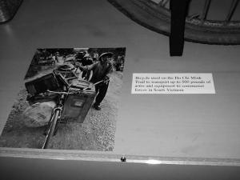
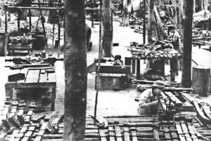
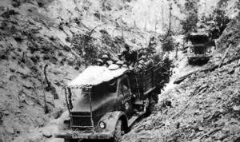
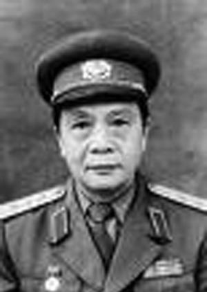
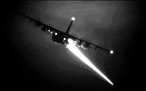
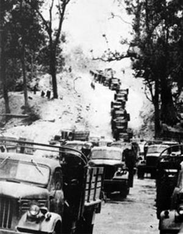

ĐƯỜNG MÒN VÔ ĐỊCH (B)

gười, vật và máy móc cùng tải hàng
Người ta đã sử dụng nhiều phương tiện vận chuyển khá độc đáo trong suốt lịch sử mười sáu năm của Đường mòn: từ sức người trong giai đoạn đầu, tới voi, rồi tới xe đạp được biến cải để có thể chở hàng trăm kí lô, rồi xe tải lớn của Trung Quốc và Liên Xô. Ban đầu, xe Liên Xô là những chiếc GAZ được sử dụng từ thời chiến dịch Điện Biên Phủ; nhưng sau đó số xe này được thay thế bằng các loại xe hiện đại hơn – phần lớn là loại Zil có trọng tải năm tới sáu tấn, giúp vận chuyển nhiều hàng hóa hơn trong hành trình xuyên đất nước. Hệ thống vận tải dọc Đường mòn thực sự là một tiến trình cách mạng – bởi vì mỗi lần vận chuyển, người ta phải tìm kiếm phương cách mới để nhiều hàng hóa được chuyển đi một cách nhanh chóng hơn.
Trước khi xe cơ giới có thể lưu thông trên Đường mòn, gùi hàng là cách thức vận tải chính yếu. Những bính sĩ vận chuyển nhiều hành nhất được tuyên dương. Nguyễn Viết Sinh – có lẽ là nhân vật minh họa rõ nhất quyết tâm của người tải hàng với mỗi lần gùi được 45 – 50 kí lô. Trong vòng bốn năm với 1.089 ngày làm việc, anh đã mang được hơn 55 tấn hàng trên lưng đi qua chặng đường có tổng chiều dài 41.025 cây số. – tương đương với đi một vòng quanh trái đất theo đường xích đạo và mang theo một lượng hàng bằng trọng lượng cơ thể. Với thành tích ấy, Sinh được tặng thưởng anh hiệu Anh hùng Lực lượng Vũ trang Nhân dân.
Dù có những nỗ lực vượt bậc như trường hợp ông Sinh thì người ta vẫn nhận thấy rằng cần phải tăng cường vận chuyển hơn nữa. Và voi đã được sử dụng; có điều cách thức này dù tăng lượng hàng hóa nhưng tốc độ vẫn rất chậm. Vì thế, người ta dùng xe đạp, đặc biệt là loại xe được thiết kế riêng cho vận tải trên Đường mòn. Người tải hàng bằng xe đạp, tương tự như những người cõng hàng trước đây, luôn thi đua để phá các kỷ lục. Một trong số họ, ông Nguyễn Điều, đã thồ hàng trung bình mỗi chuyến từ 100 đến 150 cân, và lập kỷ lục 420 cân vào năm 1964. Một nhật ký lịch sử đã viết: “Dưới đôi bàn tay của chiến sĩ vận tải, những chiếc xe đạp đã làm nên điều kỳ diệu”.

Loại xe này được thiết kế để có thể tận dụng mọi không gian vào việc thồ hàng. Hàng được chất trên tay lái, trên khung và yên. Việc điều khiển được thực hiện thông qua hai thanh gỗ được khéo léo lắp vào xe. Một thanh làm phần nối dài của tay lái, do tay lái của xe đã bị hàng che khuất; thanh này nằm cùng phía với người điều khiển. Cách thức ấy cho phép người ta điều khiển xe khá dễ. Thanh thứ hai được lắp cùng phía với thanh thứ nhất nhưng lại nằm phía đuôi xe, ngay sau yên. Cách bố trí này giúp người ta có thể điều chỉnh lô hàng và có thể kéo xe dễ dàng.
Rất dễ thấy là săm lốp xe trong điều kiện như thế sẽ chẳng chịu đựng được lâu. Khi săm bị hư, người ta lấy giẻ rách buộc vào xung quanh vành xe.
Những lối ra
Đại tá Hồ Minh Trí, cựu chỉ huy binh trạm, chỉ một lần duy nhất đi hết Đường mòn Hồ Chí Minh nhưng đã đi hàng ngàn lần trong khu vực binh trạm mình quản lý.
“Có sáu lối ra chính trên Đường mòn”, ông Trí cho biết. Binh trạm của ông Trí, một trong những binh trạm lớn nhất, có ba lối ra - ở Quảng Nam, Đà Nẵng và Khe Sanh.
Nhánh đường ở Khe Sanh được mở sau khi Thủy quân lục chiến Mỹ lập một căn cứ tại khu vực cùng tên. “Trước thời điểm đó, việc sử dụng Đường mòn chủ yếu là ở phía Tây”, ông giải thích, “nhưng sau này chúng tôi mở thêm một tuyến ở sườn Đông, bắt đầu từ Khe Sanh”. Đơn vị của Trí chịu trách nhiệm đối với nhánh sườn Đông này.
Trái tim của Binh trạm
Trong lần đầu tiên được giao nhiệm vụ chỉ huy binh trạm, ông Trí được lệnh tổ chức một sư đoàn mới – Sư đoàn 473. Sư đoàn này có một nhiệm vụ chính – đó là duy trì hoạt động của binh trạm và xử lý tất cả các vấn đề trong khu vực. Sư 473 kết hợp các đơn vị hoạt động độc lập lại với nhau và đặt dưới một ban chỉ huy. Khi sư đoàn được thành lập, ông Trí chợt thấy mình đang phụ trách một trong những binh trạm lớn nhất dọc Đường mòn.
Sư 473 gồm tám trung đoàn với tổng số 15.000 quân, tất cả đều có nhiệm vụ phối hợp bảo vệ dòng chảy liên tục của tuyến đường tiếp vận. Trong số đó, bốn trung đoàn công binh có nhiệm vụ sửa chữa, dọn dẹp đường và làm các nhiệm vụ khác để binh trạm hoạt động; một trung đoàn phòng không; hai trung đoàn vận tải phụ trách chuyển quân, thiết bị dọc Đường mòn; một trung đoàn bộ binh bảo vệ sư đoàn.

Hoạt động dọc Đường mòn được chia thành hai loại – hoạt động vận tải của xe và công việc sửa chữa/phá bom mìn/xây đường của lính công binh. Nếu những người làm nhiệm vụ thứ hai ngưng tay thì hoạt động thứ nhất không thể thực hiện được. Vì thế, lính công binh là trái tim của binh trạm.Khi một phần đường bị phá hủy, lính công binh dưới quyền ông Trí sẽ lao vào nhiệm vụ. Không có thiết bị hạng nặng như máy ủi, họ phải làm việc bằng tay, khỏa lấp những hố bom, dọn cây gãy đổ, tháo gỡ bom chưa nổ, v.v. Nếu có một khúc đường bị phá quá nặng, lính công binh sẽ lập một đường khác gần đó để thay thế. Mọi tài sản đều được huy động để đảm bảo công tác sửa chữa, dọn đường hoàn tất kịp cho đoàn xe kế tiếp đi qua. Công việc sửa chữa hiếm khi kéo dài quá một ngày. Lính công binh của Đại tá Trí luôn ý thức về đảm bảo tiến độ - vì họ biết rằng sự sống của đồng đội ở miền Nam phụ thuộc nhiều vào các đoàn xe chạy ban đêm.
Ném bom đêm
Qua một cuốn nhật ký lịch sử, tôi được biết rằng đối với những người ở Đường mòn, ban đêm không phải là thời gian ngơi nghỉ. “Đêm tối không ngăn được cuộc chiến. Xe tải vẫn chạy với một chiếc đèn nhỏ được lắp dưới gầm; những con người trẻ tuổi, với ngọn đèn nhỏ trên tay, lái xe vượt qua ma trận hố bom, bom nổ chậm, những tảng đá hay đường ngầm. Rồi quân thù ào tới thả pháo sáng và cả khu vực sáng lên, mọi thứ rõ như ban ngày. Máy bay địch thường nhằm vào giao lộ, ngầm và khúc cua. Cách duy nhất để vượt qua những cơn mưa bom đạn này là: tiếp tục tiến lên. Xe tải không còn kính và thùng xe thì đạn găm lỗ chỗ. Xe chạy 10, 20 và dài nhất là 30 cây số mỗi ngày. Nếu một chiếc xe bị hỏng và nằm choán đường, bộ đội sẽ dỡ hàng và đẩy xuống hẻm núi bên cạnh để cho những chiếc đi sau tiếp tục hành trình…”.
Một nhà thơ nổi tiếng của miền Bắc, ông Phạm Tiến Duật, đã có nhiều năm sống dọc Đường mòn, chủ yếu là ở tổng hành dinh của vị Tư lệnh trưởng Đường mòn. Năm 1969, ông viết một bài thơ để ca ngợi những nam nữ chiến sĩ đã dũng cảm chịu đựng các cuộc oanh kích ban đêm:
Vầng trăng và những quầng lửa
Bom bi nổ trên đỉnh đồi
Lốm đốm nền trời những quầng lửa đỏ
Một lát sau cũng từ phía đó
Trăng lên.
Trong ánh chớp nhoáng nhoàng cây cối ngả nghiêng
Một tổ công binh đứng ngồi bên trạm gác
Cái câu trẻ măng cất lên tiếng hát
Khi biết trong hầm có cô bé đang nghe.
Trong ánh chớp nhoáng nhoàng là những đoàn xe
Buông bạt kín rú ga đi vội
Trên đỉnh đồi vẫn vầng trăng đỏ ối
Tưởng cháy trong quầng lửa bom bi.
Những đồng chí công binh lầm lì
Mùi bộc phá trộn vào trong tiếng hát
Trên áo giáp lấm đầy đất cát
Lộp độp cơn mưa bi sắt đuối tầm.
Hun hút đường khuya rì rầm rì rầm
Tiếng mạch đất hai miền hòa làm một
Và vầng trăng, vầng trăng đất nước
Mọc qua quầng lửa mọc lên cao.
1969
Đường mòn biến ảo

Người Mỹ thấy Đường mòn Hồ Chí Minh phát triển như một khối ung thư. Nếu máy bay ném bom chặn được hướng đi này, con đường sẽ mở ra hướng đi khác. Một cuốn nhật ký thời ấy có đoạn: “Để lưu thông, một con đường là chưa đủ. Cần phải có nhiều đường dọc, đường ngang, đường nối; nếu đường này bị đánh bom, lái xe có thể ngay lập tức chọn đường khác để thoát khỏi máy bay kẻ thù. (Để đi) một quãng đường chừng một ngàn cây số, người ta đã phải xây dựng một mạng lưới 16.000 cây số”. Các biển báo đường tránh với những mũi tên chỉ hướng đi mới luôn luôn có sẵn. “Nếu nhánh đường này bị tắc, công binh sẽ lập tức mở một con đường mới vốn đã được dự trù trước”, nhà báo Trần Công Tính giải thích. “Ai cũng quyết tâm duy trì hoạt động giao thông trên đường”.Đường mòn luôn luôn thay đổi nên những người đi qua đây sẽ thấy nó khác nhiều so với lần trước. Một mục nhật ký của Từ Sơn tả về chuyến đi ra Bắc bảy năm sau khi vào Nam.
“Chúng tôi không đi cùng lộ trình mà chúng tôi từng qua khi tiến ra mặt trận bảy năm về trước (1964). Chúng tôi rời sở chỉ huy… vào sáng ngày 14 tháng 11 năm 1971, và tới địa điểm họp vào buổi tối… Đã có rất nhiều đổi thay xung quanh. Phần lớn thời gian chúng tôi đi theo đường mòn trong rừng, những con đường giờ đã rộng hơn, hai người, thậm chí bốn người sánh vai nhau cũng đủ chỗ. Nhiều lần chúng tôi đi theo đường xe chạy cho dễ dàng.
Đường sá những nơi chúng tôi đi qua đã được cải thiện đáng kể. Nhưng an toàn vẫn là một vấn đề lớn. Bom và pháo vẫn dội không ngớt, và đáng sợ nhất là bom rải thảm…”.
Dọn mìn
Khối lượng vũ khí khổng lồ mà Mỹ rải xuống đầu người Việt Nam trong suốt chiến tranh khiến lực lượng công binh luôn bận rộn.
“Ban đầu chúng tôi tổn thất khá nhiều sinh mạng khi cố dùng xẻng để dọn mìn (mìn chống tăng và mìn sát thương được thả từ máy bay)”, Đại tá – Trưởng binh trạm Hồ Minh Trí cho biết. Những người lính công binh không biết rằng lưỡi xẻng bằng sắt đã kích hoạt mìn từ tính. Khi nhận ra được điều này, lính công binh lột hết áo quần khi gỡ mìn. Ông Trí nói rằng chính yếu tố sinh tồn đã tạo động lực cho lính tráng của ông nhanh chóng học hỏi những kỹ thuật mới để đối phó với mìn.
Một trong những kỹ thuật được áp dụng đầu tiên đó là đào mìn lên và kích nổ ngay tại chỗ. Tuy nhiên, cách làm này thường gây hư hỏng đường sá, dẫn tới việc trì hoãn các đoàn xe trong thời gian sửa đường. Sau khi biết rõ cấu tạo của mìn, lính công binh mới nghiên cứu cách vô hiệu hóa. Mỗi khi phát hiện ra quả mìn được thả từ máy bay xuống, người ta liền cắm một lá cờ ngay vị trí của nó. Tiếp đó, đội tháo gỡ của các binh trạm sẽ được điều đến để làm nhiệm vụ.
Ông Trí cho biết rằng sự tinh vi trong kỹ thuật tháo gỡ bom mìn của Việt Nam ngày càng tăng và người Mỹ cũng không ngừng cải tiến vũ khí của họ. Thế nên lính của ông phải luôn luôn sẵn sàng đối phó với thách thức mới.
Sự khéo léo của người Việt Nam luôn giúp họ biến cái tiêu cực thành tích cực. Theo ông Trí, đó là nguyên nhân tại sao “chúng tôi muốn tháo gỡ chứ không kích nổ, bởi khi tháo ra chúng tôi có thể tận dụng các bộ phận của mìn – chẳng hạn như mạch điện – cho mục đích khác”.
Mỗi binh trạm sử dụng các phương cách khác nhau để dọn dẹp bom mìn. Trong khi đơn vị của Trí tập trung tháo gỡ, những nhóm khác lại ưa kích nổ ngay tại trận.
Trung úy Lương Công Định được điều lên Đường mòn vào tháng 1 năm 1968. Ông ở đấy cho tới khi Sài Gòn thất thủ vào năm 1975. Là lính công binh đảm nhiệm việc đảm bảo xe cộ đi qua binh trạm mình thông suốt, Định còn có nhiệm vụ dọn dẹp bom mìn. “Tôi đóng quân tại Savannakhet ở Lào”, Định kể. “Mỗi khi đường bị ném bom, một tổ sẽ được điều đi sửa chữa… Họ có thể kích nổ tại chỗ hoặc tháo ngòi bom mìn. Mỹ dùng rất nhiều loại bom mìn khác nhau. Họ thả mìn từ trường và bom thông thường… Nhiệm vụ chính của đơn vị là phá hủy những thứ này nên chúng tôi ít khi tháo gỡ”.
Dù sử dụng phương pháp nào thì bước đòi hỏi đầu tiên vẫn là xác định vị trí của quả mìn. Đôi khi nhiệm vụ này khó khăn hơn nhiều so với những bước còn lại. Như ông Định giải thích: “Thời điểm khó khăn nhất là lúc mìn vừa được rải xuống. Chúng tôi không biết có bao nhiêu quả hoặc loại mìn gì được thả. (Bùn đất che phủ khiến cho mắt thường không thể thấy được các quả mìn được thả xuống đường). Tôi cùng với đồng đội chịu trách nhiệm dọn mìn trong một đoạn đường dài từ năm tới sáu cây số trên đèo Bà Nhạ vào tháng 10 năm 1969… Để dọn mìn, chúng tôi quyết định sử dụng một chiếc xe ‘thử’ chạy trên đường để xem có quả mìn từ trường nào không. Tôi xung phong ngồi bên cạnh người lái xe tải; anh này cũng là người xung phong nốt. Khi bước lên xe, hai chúng tôi tin rằng mình sẽ chết vào ngày đó – và cả hai đều chuẩn bị tinh thần để hy sinh. Tài xế cho xe chạy chậm… được một đoạn chừng 150 mét. Đột nhiên, có một tiếng nổ rất lớn. Chiếc xe cán phải mìn. Nó rung lên nhưng không bị lật… Mọi người đứng xem tưởng chúng tôi đã chết khi thấy một phần chiếc xe bị phá hủy. Nhưng may mắn thay, quả mìn nằm khá sâu dưới đất nên sức công phá bị giảm. Có nhiều nguyên nhân khiến quả mìn bị vùi sâu. Thứ nhất, khi rơi xuống đất, chân thăng bằng của quả mìn không bung ra khiến nó cắm sâu vào lòng đất. Thứ hai, nước mưa đã đẩy bùn đất lấp quả mìn. Thứ ba, bom nổ xung quanh đã xới đất bồi lấp lên phía trên quả mìn”.
Thật kỳ diệu, Định chỉ bị thủng màng nhĩ bên trái.
“Sau này, chúng tôi sử dụng một nhóm sáu lính công binh – ba người bên trái và ba người bên phải – để dò mìn”, ông kể tiếp. “Mọi người dùng tay để dọn mìn… Một vài lần, chúng tôi quyết định mở đường mới”.
Định và đồng đội không có thiết bị công nghệ cao để định vị mìn. Họ chỉ dựa vào bản năng, lòng dũng cảm, sự khéo léo và vận may.
Ông Định cho biết còn có một cách dọn mìn khác nữa, đó là “lấy những thùng phuy dầu trống rồi cho chúng lăn từ trên dốc xuống để kích hoạt mìn từ trường”.
Nhà báo Trần Công Tấn, cũng như những người có mặt thường xuyên trên Đường mòn, cho biết có nhiều phương pháp dọn mìn:
“Khi xác định được vị trí quả mìn, người ta sẽ sử dụng một chiếc xe tải được trang bị lớp bảo vệ đặc biệt để kích nổ. Những thanh gỗ lớn được gắn hai bên thành, dưới khung gầm và xung quanh máy xe. Lái xe và lái phụ ngồi vào buồng lái, cả hai đều mang áo phòng không và mũ bảo hiểm Liên Xô. Một sợi dây rất dài – đến 500 mét – được buộc phía sau để xe kéo đi. Khi khúc đường cần dọn dẹp không được thẳng thì người ta có thể điều chỉnh sợi dây cho phù hợp. Sợi dây phía sau – là một giải pháp an toàn cho chiếc xe – được gắn với một thùng phuy dầu thật nặng để kích nổ mìn. Thùng phuy này phải nặng tới một mức độ nào đó mới có thể kích nổ mìn được. Công binh của chúng tôi nghiên cứu rất kỹ các loại mìn và biết rõ cần phải có thùng phuy nặng bao nhiêu. Sau đó chúng tôi sẽ chất vật nặng vào thùng phuy – thường là kim loại vụn – chẳng hạn vành bánh xe, bộ phận máy móc, v.v. – một phần trong số này được lấy từ những chiếc xe bị phá hủy dọc đường. Thùng phuy khi đè lên quả mìn sẽ khiến nó phát nổ. Nếu sử dụng dây ngắn hơn khi đoạn đường thẳng cần dọn dẹp rất ngắn, tài xế cần phải tăng tốc để kịp tránh xa nơi phát nổ một khoảng cách an toàn. Khoảng cách an toàn phải lớn hơn 50 mét. Đôi khi tài xế không thoát khỏi vụ nổ - nhưng cách này thành công tới 90 phần trăm”.
Một biến thể khác của kỹ thuật phá mìn là lấy người thay thế xe tải. Bốn hoặc năm binh sĩ tình nguyện trẻ tuổi sẽ đào một hầm cá nhân ngay bên ngoài phạm vi công phá của chất nổ. Thùng phuy nặng lúc này được đặt phía bên kia của quả mìn. Rồi người ta lấy một sợi dây nối từ thùng phuy dẫn tới hầm cá nhân. Sau đó những người tình nguyện sẽ chui vào hầm cá nhân rồi kéo sợi dây, khi thùng phuy cán lên quả mìn sẽ khiến nó phát nổ.
Có một kỹ thuật khác được lính công binh Đường mòn áp dụng; đó là sử dụng một chiếc xe bọc thép, phương pháp được ông Vũ Đình Cự sáng chế. Có khoảng ba mươi chiếc se kiểu này đã được chế tạo.
“Đó là những chiếc xe bọc thép cũ”, Tư lệnh trưởng Đường mòn, Tướng Đồng Sĩ Nguyên, giải thích. “Chúng tôi dùng xe này để dẫn đầu đoàn xe. Nó được thiết kế để có thể kích nổ mìn từ trường từ cự ly khoảng mười mét. Sau một trận ném bom, các đơn vị công binh sẽ kiểm tra hiện trường để xác định những quả chưa nổ. Sau đó xe bọc thép từ trường sẽ được huy động để kích nổ chúng. Loại xe này hoạt động rất hiệu quả, hiếm khi bị phá hủy, ngoại trừ khi nó cán lên quả mìn ngay lúc mìn phát nổ. Chúng tôi thường có một hoặc hai chiếc xe dự phòng, đặc biệt là ở các điểm nón. Luôn luôn có một cuộc chiến giữa sự sáng tạo của kẻ thù trong việc chế tạo mìn và sự khéo léo của chúng tôi trong việc đối phó”.
°°°

Nhưng hoạt động rà phá bom mìn dọc Đường mòn không phải lúc nào cũng kết thúc mỹ mãn. Thiếu tướng Nguyễn Đôn Tự là người từng chứng kiến điều đó. Sau khi quân đội Bắc Việt chiếm được tỉnh lỵ Quảng Trị vào ngày 1 tháng 5 năm 1972, ông Tự - lúc bấy giờ là trung tá – được giao nhiệm vụ tham gia ban hoạch định phối hợp tác chiến để tấn công thành phố Huế. Tư lệnh của quân đội miền Bắc, Đại tướng Võ Nguyên Giáp, đã phê chuẩn chiến dịch.“Tướng Giáp chỉ lên kế hoạch tấn công một khi ông thấy rằng công tác hậu cần đã sẵn sàng cho chiến dịch thành công”, ông Tự giải thích.
Rõ ràng ông Giáp lạc quan về tình hình tiếp vận. Vào ngày 7 tháng 5, ông Tự được lệnh từ Quảng Trị đi theo Đường mòn Hồ Chí Minh để đến phía Tây thành Huế. Ông tháp tùng Đại tá Nguyễn Chí Điềm1, Tư lệnh lực lượng Đặc công – bao gồm những đơn vị công binh từng tạo dựng danh tiếng qua nhiều trận đánh lẫy lừng. Bốn tiểu đoàn Đặc công đã hành quân vào phía Tây thành phố Huế để chuẩn bị cho kế hoạch tấn công. Cùng với ông Điềm là Tư lệnh Quân khu 5, Tướng Trần Văn Quang2.
“Đoàn chúng tôi gồm bốn chiếc xe”, ông Tự kể. “Một chiếc chở lính công binh đi trước để dọn chướng ngại vật. Chiếc xe jeep của tôi (chở ông Điềm) đi tiếp theo, tiếp đó là chiếc jeep nữa và một xe tải chở hành lý cùng đồ tiếp tế. Bấy giờ là ban đêm. Khoảng cách giữa xe công binh và xe jeep của tôi là một trăm mét. Đây là ngày thứ ba của hành trình và chúng tôi mới vượt qua vĩ tuyến 17 chưa đầy hai mươi cây số. Đột nhiên một tiếng nổ lớn vang lên, chiếc xe trước mặt tôi bốc cháy. Nó cán trúng một quả mìn từ trường”.
Ông Tự cho biết tất cả mười binh sĩ công binh và lái xe thiệt mạng ngay tại chỗ. Để tránh lặp lại bi kịch, nhóm “quyết định bỏ xe jeep lại và đi bộ tới nơi tập kết”.
Chuyến đi bộ mất hết ba tuần. Họ đi cả ngày lẫn đêm (nếu di chuyển bằng xe thì chỉ thực hiện vào ban đêm) bởi họ mất nhiều thời gian vào việc tìm những nơi còn ít lá cây sót lại để đi sau khi khu vực này bị rải chất làm rụng lá. “Đôi khi chúng tôi phải lần xuống những triền đồi hoặc bờ sông để ẩn náu trong lùm cây bụi”, ông Tự giải thích. Cuộc hành quân của cả nhóm đầy khó khăn và khá chậm. Nhưng hình ảnh về chiếc xe tải bị phá hủy vào hôm trước luôn nhắc nhở ông Tự và cả nhóm đặt sự thận trọng lên trên tốc độ. (Người Mỹ không hề biết rằng, một sĩ quan về sau đã đóng vai trò chủ chốt trong cuộc tấn công cuối cùng của Bắc Việt vào Sài Gòn – Đại tá Điềm – đã suýt bị tước đi vai trò ấy. Trong vụ mười lính công binh không may thiệt mạng, ông Điềm đã sống sót để có thể tham gia vào chiến dịch thắng lợi cuối cùng của Hà Nội. Tuy nhiên, ông không thoát một cách trọn vẹn. Vài năm sau, ông Điềm đã chết vì ung thư, căn bệnh được cho là do phơi nhiễm hóa chất làm rụng lá ngày trước. Trên thực tế, hai trong số năm người thuộc nhóm hoạt động chung với ông Điềm trong phần lớn thời gian chiến tranh về sau đã chết vì ung thư liên quan đến phơi nhiễm).
Hiểm họa bom mìn dọc Đường mòn có muôn hình vạn trạng.
Mìn từ trường gây hiểm nguy nghiêm trọng cho xe cộ nhưng không đe dọa người lính đi bộ bởi loại vũ khí này chỉ phát nổ khi tiếp xúc với kim loại và vật nặng như xe ô tô. Tuy nhiên, binh lính đi bộ cũng không hề được an toàn bởi rất nhiều mìn sát thương đã được thả xuống dọc Đường mòn, gây nên bao khó khăn gian khổ cho tất cả những người đi lại trên con đường ấy.
Loại mìn sát thương mà người Việt Nam sợ nhất là “mìn râu tôm”. Khi rơi từ máy bay xuống đất, quả mìn bắn dây ra theo nhiều hướng khác nhau, mỗi sợi dài chừng tám mét. Các cợi dây trở thành bẫy treo – một khi đụng vào dây sẽ kích nổ quả mìn, làm bắn ra hàng trăm mảnh nhỏ. Binh sĩ ít kinh nghiệm và không hiểu rõ loại mìn này, khi phát hiện một sợi dây liền đổi hướng đi, nhưng sẽ lại vấp phải sợi dây khác và kích nổ mìn.
Một loại mìn sát thương khác mà người Việt Nam thường gặp là “mìn lá”, gọi theo hình dáng bên ngoài của nó.
Tướng Đồng Sĩ Nguyên nói rằng loại mìn này chỉ có hiệu quả trong một giai đoạn ngắn ban đầu khi mới được thả dọc Đường mòn. “Chúng tôi dùng xe xích cày xới khu vực mìn được thả xuống. Công binh làm nhiệm vụ này và họ rất thích thú. Khi xe cán phải, mìn nổ nghe như tiếng pháo ngày tết. Chúng tôi chọn cách xử lý mìn lá như thế thay vì tháo gỡ vì tháo gỡ rất mất thời gian và nguy hiểm hơn. Trên đường Trường Sơn thì mỗi phút giây đều quý giá”.
Bom tiếp tục rơi
Những người từng đi dọc Đường mòn thành công vẫn không thể đoan chắc rằng họ sẽ sống sót trong chuyến đi sắp tới. Mỗi một chuyến đi đòi hỏi sự thận trọng tối đa bởi lẽ hiểm họa mang nhiều hình thù khác nhau.
Ông Tự từng suýt chết trong lần đụng phải mìn khi đang trên đường tới Huế. Chuyến trở về của ông cho thấy cần phải luôn cẩn trọng cao độ.
Sau khi tới nơi, ông Tự và đồng đội được tin Đại tướng Giáp đã ra lệnh hoãn tấn công Huế. Nguồn tin tình báo cho biết Mỹ đang triển khai các chiến dịch ném bom B-52 lớn. Những chiến dịch kiểu này nhằm vào nhiều mục tiêu khác nhau nhưng Đại tướng Giáp biết chắc rằng Đường mòn Hồ Chí Minh và lực lượng bảo vệ Quảng Trị sẽ nằm trong số các mục tiêu đó. (Đây là điểm khởi đầu của chiến dịch ném bom kéo dài năm tháng của Không lực Mỹ, được biết đến với tên gọi Chiến dịch Linebacker I. Chiến dịch được thiết kế nhằm cung cấp sự hỗ trợ không quân chiến thuật cho quân Việt Nam Cộng hòa tái chiếm lại các khu vực bị quân miền Bắc chiếm gần đây).
Không vội vã trở về với đơn vị ở Quảng Trị, ông Tự và những người đồng hành cưỡi xe lên Đường mòn. Họ đi ban đêm và biết rằng máy bay B-52 có thể ném bom bất cứ lúc nào. Dựa vào kinh nghiệm của mình, ông ra lệnh cho tài xế tránh đi vào Đường mòn chính mỗi khi điều kiện về địa hình cho phép. Xe chạy song song với Đường mòn trong một khoảng cách chừng một cây số, xuyên qua những khu rừng thấp. Cách di chuyển này đã cứu sống Tự và đồng đội trong đêm hôm đó. Một lần khi xe vừa rời đường chính thì B-52 ập đến rải bom lên Đường mòn. (Máy bay B-52 bay rất cao và hoạt động vào ban đêm nên khác với các loại máy bay chiến thuật, người dưới mặt đất không hề thấy hoặc nghe được tiếng máy bay khi nó đến gần; thường thì người ta chỉ nghe tiếng bom rít vài giây trước khi nó rơi xuống mặt đất hoặc phát nổ). Một quả bom do B-52 thả xuống phát nổ chỉ chỉ cách xe của Tự có 500 mét.
“Giống như một trận động đất vậy”, ông Tự nhớ lại. “Chiếc xe jeep của chúng tôi bị chấn động mạnh vì sức ép của bom”. Tin rằng trận ném bom đã qua, đoàn xe của Tự trở lại đường chính, tiếp tục hành trình kéo dài mười ngày trở lại Quảng Trị.
“Một lần khác, chúng tôi bị máy bay chiến thuật tấn công. Mọi người buộc phải bỏ xe lại. Có một người chui xuống gầm xe tải chở hàng và hành lý để trốn. Chiếc xe bị trúng đạn nhiều lần nhưng may nhờ có hành lý và hàng hóa bên trên chắn đạn nên người đó không bị thương”.
(Cả nhóm trở lại đơn vị ở Quảng Trị để chờ đợt ném bom chấm dứt. Thời gian chờ đợi rất lâu bởi quân miền Bắc quyết tâm không bỏ rơi tỉnh lỵ mà họ đã dốc hết sức để có được. Ông Tự ước Lượng rằng trong số bốn sư đoàn quân đóng ở đấy – bao gồm một sư đoàn dự bị - thì tỷ lệ thương vong lên tới 50%. Tuy nhiên, người ta đã tuyển thêm tân binh để thay thế theo tỷ lệ một người mất khả năng chiến đấu thì có một người khác tới).
Nhật ký của ông Từ Sơn tả những trận ném bom trên Đường mòn:
“Chúng tôi vừa trải qua một trận ném bom tại Trạm 54-A vào lúc 9 giờ tối ngày 4 tháng 1 năm 1972. Tôi đang nằm trên võng bên cạnh họa sĩ Thái Hà thì nghe tiếng gì giống như một cơn bão đang ập tới. Tiếp đó là những tiếng nổ đanh, như có cả ngàn quả lựu đạn đang rơi xuống đầu chúng tôi. Mọi người chỉ kịp nằm áp sát mặt đất và ở yên đó trong khi bản giao hưởng bom kéo dài suốt bốn mươi phút. Bom rơi khắp nơi, mảnh bom chết chóc bay vèo vèo trên không. Có một người bị mất gần nguyên cái đầu (cường điệu). Trong suốt trận bom, anh (Thái Hà) cứ phàn nàn rằng những người ở trạm không chịu đào hầm. Sau khi bom ngưng, người ta mới chỉ một chiếc hầm cá nhân mà anh không thấy. Nó nằm ngay sát võng của anh”.
Nghe trộm
Không phải mọi thứ mà người Mỹ thả xuống Đường mòn đều có thể nổ được. Nhiều khi những thứ được thả xuống có nhiệm vụ khác. Chẳng hạn như thiết bị nghe lén. Những thiết bị này có chức năng như tai người, ghi nhận lại mọi hoạt động dọc Đường mòn. Trong tầm phủ sóng giới hạn, chúng có thể ghi nhận được hoạt động chuyển quân hoặc vận tải.
Chỉ huy các binh trạm thường lập nhóm chuyên trách săn tìm thiết bị do thám. Những nhóm này rất thông thạo trong việc định vị và từ đó tháo dỡ chúng.
“Đôi khi các thiết bị được thả xuống những khu vực không mấy quan trọng nên chúng tôi chủ tâm kích hoạt chúng”, ông Trí cho biết với một nụ cười. “Rất khó để phát hiện thiết bị nghe lén và chỉ có thể sử dụng mắt thường đẻ tìm”.
Bộ đội được huấn luyện để theo dõi thiết bị nghe lén và nhiều trạm quan sát đặc biệt được thiết lập để theo dõi máy bay thả máy móc do thám. Có một số thiết bị cùng loại được sử dụng tại hàng rào điện tử dọc vĩ tuyến 17 – một sáng kiến của Bộ trưởng Quốc phòng Robert McNamara. Được biết đến với tên gọi Hàng rào điện tử McNamara, hệ thống này ra đời nhằm giám sát hoạt động dọc giới tuyến với miền Bắc, từ đó xác định các tuyến vận lương và vận quân vào miền Nam.
Tướng Đồng Sĩ Nguyên nói về hiệu quả của Hàng rào: “Tương tự Hàng rào điện tử McNamara, những thiết bị do thám thả xuống trông giống như cây rừng. Chúng được thả trong một khu vực có chiều rộng tới 100 cây số, bao trùm một mạng lưới giao thông của chúng tôi. Phải mất bảy ngày để tìm ra giải pháp. Rồi chúng tôi đưa xe tới gần chỗ có thiết bị đó và cho chạy đi chạy lại (để người Mỹ tưởng rằng khu vực này có quân hoạt động). Trong vòng vài tháng sau đó, người Mỹ tiếp tục thả máy do thám xuống trước khi ngưng hẳn. Phương cách này khiến chúng tôi mất một số xe khi máy bay Mỹ tấn công khu vực mà chúng tôi cố ý cho xe tải chạy để đánh lừa. Khi người Mỹ bị dụ tới một địa điểm khác. Các đoàn xe của chúng tôi hoạt động an toàn hơn”.
Đường dây của sự sống và cái chết
Bên cạnh chốt quân sự đóng ở mỗi binh trạm còn có nhiều trạm quan sát. Khoảng cách giữa các trạm thay đổi tùy thuộc vào địa thế của đoạn Đường mòn ở đấy. Ở nhiều nơi, các trạm chỉ cách nhau chừng 15-20 cây số.
Sự sống sót trên Đường mòn phụ thuộc nhiều vào hoạt động thông tin liên lạc nhanh chóng, không bị kẻ thù nghe lén và ngăn chặn. Hoạt động liên lạc được thực hiện bằng máy phát sóng chạy ắc quy hoặc đường dây điện thoại. Phương thức thứ hai được sử dụng nhiều vì có thể tránh được nguy cơ bị Mỹ bắt trộm sóng. (Việc sử dụng sóng vô tuyến chỉ được thực hiện trong trường hợp khẩn cấp hoặc với các liên lạc được ưu tiên cao). Nhiều lần, máy bay ném bom làm đứt đường dây điện nên các binh trạm phải cử người đi sửa chữa. Hệ thống này rất hiệu quả trong việc kết nối các trạm với nhau và giới hạn khả năng tình báo của quân Mỹ.
Trung sĩ Trần Văn Thực rất thông thạo hệ thống liên lạc của Đường mòn. Năm 1972, ông được điều đến một binh trạm gần Khe Sanh. Ông kể về cuộc sống của những người chịu trách nhiệm duy trì đường dây liên lạc:
“Trước năm 1972, việc di chuyển từ Bắc vào Nam rất khó do quân của Tổng thống (miền Nam) Thiệu kiểm soát nhiều nơi”, ông giải thích. “Nhưng sau năm 1972, bộ đội miền Bắc nắm quyền kiểm soát và tình hình được cải thiện. Nơi tôi công tác là điểm tiếp quân lớn nhất Đường mòn. Đây là một điểm dừng chân tạm thời cho bộ đội di chuyển qua lại giữa Việt Nam và Lào. Nơi này đóng vai trò là điểm cung cấp quân nhu cho các đơn vị quân đội đang trên đường hành quân ra chiến trường. (Binh trạm cung cấp rất nhiều dịch vụ cho người đi qua và cũng cho phép một người có thời gian lưu lại dài hơn một điểm tiếp quân, còn các điểm tiếp quân, do đặc thù nhiệm vụ, thường có ít nhân sự hơn). Vì có nhiều nhà kho và cơ sở hậu cần, một điểm tiếp quân có thể rộng năm tới bảy héc ta. Các cơ sở trực thuộc được phân bố rải rác để tránh bị trúng bom đồng loạt”.
Việc đảm bảo hoạt động liên lạc dọc Đường mòn luôn được nhấn mạnh, riêng tại khu vực của Thực thì nhiệm vụ này đặc biệt quan trọng vì đây là điểm tiếp quân lớn nhất Đường mòn. Sự thành công của họ được đo bằng khả năng kết nối giữa các ban chỉ huy cấp cao với trạm tiếp quân này để thông báo đơn vị nào sẽ đến vào lúc nào. Công tác này cũng quan trọng ở chỗ nó giúp đảm bảo việc vận lương, vũ khí, đạn dược, v.v., đúng giờ để tiếp tế cho các đơn vị.
“Tôi làm việc trong một nhóm chịu trách nhiệm kiểm tra và duy trì toàn bộ đường dây liên lạc từ trạm của tôi tới tất cả các trạm có đường dây kết nối trực tiếp khác”, ông Thực cho hay. “Những đường dây này nối chiến trường phương Nam tới Hà Nội thông qua các trạm như chúng tôi. Bất kỳ một sự đứt gãy nào cũng khiến liên lạc bị đình trệ, vì thế chúng tôi phải kiểm tra thường xuyên”.
Với nhiệm vụ duy trì đường dây liên lạc, nhóm ông Thực được hưởng một quy chế đặc biệt. Tất cả các cá nhân và đơn vị khác khi tới trạm tiếp quân hoặc binh trạm, dù là người làm việc thường trực ở đó, đều phải có giấy công tác. Ông Thực không cần thủ tục này. Công việc bảo đảm đường dây đòi hỏi những người lính như ông phải di chuyển càng nhanh càng tốt, tới bất cứ trạm nào để kiểm tra các chỗ đứt gãy và vì thế họ được đặc quyền di chuyển tự do.
“Khu vực chúng tôi phụ trách có bán kính mười bốn cây số kể từ trạm tiếp quân”, ông Thực giải thích. “Lúc đường dây không bị đứt, chúng tôi đi về mất một ngày; lúc khác thì lâu hơn. Có hai đường dây chúng tôi phải kiểm tra – đường dưới đât và đường trên cao. Đường trên cao sử dụng cột làm từ cây rừng và tre, là đường cố định. Đường dưới đất chỉ tạm thời nên sau khi ổn định, chúng tôi có thể cuộn dây lại thu về để tái sử dụng”.
Ở chỗ sông suối, người ta luồn dây vào trong các ống nối với nhau rồi dùng đá dằn xuống đáy sông.
Thợ đường dây chỉ có các đồ nghề cơ bản, chẳng hạn như máy kiểm tra tín hiệu và kìm cắt dây. Đôi khi một cú sốc điện cũng cần thiết để dạy cho người ta biết cách sử dụng đồ nghề một cách hợp lý.
“Chúng tôi có thiết bị kiểm tra xem đường dây có hư hỏng gì không”, Thực cho biết. “Nếu đường dây hư, thiết bị sẽ cho biết phía nào của sợi dây nhẹ hơn, tức là phía đó dây bị đứt, tiếp theo chúng tôi lần theo sợi dây về hướng đó để tìm điểm đứt. Để kiểm tra một sợi dây, tôi cắt vỏ bọc của nó và cặp máy vào. Cách dễ nhất theo tôi là dùng răng cắn. Tôi thường dùng răng cho đến một lần khi tôi đang cắn dây thì có ai đó sử dụng đường dây. Tôi ngã ngửa ra vì bị điện giật”.
Sau lần bị điện giật đó, ông Thực mới nhận ra rằng sử dụng kìm cắt dây sẽ đỡ nguy hiểm hơn.
Những thợ kỹ thuật đường dây như Thực hoạt động theo tổ ba người. Dù đôi khi có sự thay đổi thành viên nhưng tình cảm giữa những người trong nhóm rất thắm thiết, ngay cả với “tân binh”.
Vào tháng 9 hoặc 10 năm 1972, tổ của Thực đi kiểm tra đường dây. Thành viên mới nhất của tổ - cậu Cường – là một người trẻ tuổi, vừa mới cưới và vợ đang mang thai đứa con đầu lòng. Chàng tân binh tràn đầy năng lượng và rất háo hức trước chuyến đi đầu tiên. Trên đường từ suối La La ở Quảng Trị trở về trạm, khi tổ công tác tới thôn Lương Kim nằm ở vùng đồng trũng thì máy bay đột nhiên xuất hiện. Cả nhóm hối hả tìm chỗ nấp giữa lúc bom bắt đầu rơi. Một quả nổ rất gần họ. Cả ba đều bị thương. Cường bị thương rất nặng, ngất đi. Thực, nằm cách đấy mười lăm mét, bị mảnh bom xuyên thủng dạ dày. Thành viên thứ ba bị thương ở đầu. Dù rất đau đớn, Thực vẫn cố tìm cách giúp đỡ Cường. Trong cơn hấp hối, chàng trai trẻ đã thỉnh cầu Thực. Cậu ta nhờ Thực tìm gặp vợ mình khi chiến tranh kết thúc và bảo cô ấy đi bước nữa. Câu ta nói, phải làm như thế để con tôi còn có một người cha.
“Sau giải phóng, tôi tìm được vợ Cường”, Thực kể. “Tôi tới nhà cô ấy và nói rằng tôi đã ở bên cạnh lúc chồng cô ấy hấp hối. Tôi truyền đạt lại di nguyện của cậu ấy. Đó là một di nguyện khó chấp nhận đối với cô ấy. Dù biết rằng cần phải đi bước nữa để đứa con có một người cha nhưng cô ấy luôn bị giằng xé bởi lòng thủy chung đối với Cường. Đó là một tình cảnh khó khăn của rất nhiều góa phụ trẻ sau chiến tranh”.
Công việc sửa chữa và bảo trì đường dây là một công việc tập thể nhưng đôi khi người ta phải làm việc này một mình. Cuối năm 1972, tổ của Thực có chuyến đi kiểm tra dài hơn dự tính. Thực ở lại nơi làm việc còn hai người kia trở về trạm để lấy thêm đồ tiếp tế. Tuy nhiên, mưa lớn gây ngập lụt khiến họ không thể trở lại nơi Thực đang chờ. Ông buộc phải trải qua một tháng cô đơn giữa rừng, tiếp tục công việc sửa chữa đường dây và sống bằng thức ăn hái lượm được.
“Quả thực là rất cô đơn”, ông Thực nhớ lại. “Tôi sống một mình giữa rừng. Bụng đói cồn cào, phải lấy súng bắn cá ăn. Trời rất lạnh. Tôi chỉ có duy nhất một bộ quân phục và phải mặc nó thường xuyên, ngay cả khi ướt sũng”.
Đêm tối thật kinh khủng đối với Thực. Ông không thể nhóm lửa sưởi ấm bởi ngọn lửa có thể chỉ điểm cho kẻ thù. Đến lúc mưa lũ qua đi, ông sung sướng vô cùng khi gặp lại đồng đội.
Thợ đường dây là những chuyên gia đường rừng. Ban đầu họ dựa vào bản đồ và la bàn để định vị nhưng sau khi đã dày dạn kinh nghiệm, họ có thể tự tìm được đường đi xuyên qua rừng rậm. Nhìn vào một cái cây bị cong hoặc một tảng đá khác thường là họ có thể định hướng để đi một chặng đường dài mà không cần coi bản đồ. Họ thông thuộc đường đi lối lại đến nỗi đôi khi họ được phân công làm giao liên dẫn đường cho các nhóm đến trạm tiếp quân hoặc một binh trạm khác.
Công việc của Thực cũng có những khoảnh khắc vui vui. “Có lần tôi sửa chữa một đường dây”, Thực kể. “Khi vừa mới nối xong, tôi nhận được một cuộc gọi đến. Tôi hỏi ai đó. Người kia trả lời ‘Tao đây’. Vì không biết ‘tao’ là ai nên tôi mới hỏi lại rằng ai đang ở đầu dây bên kia thế. Đầu kia lại nói ‘Tao đây’. Anh ta cứ không xưng danh nên tôi cứ phải hỏi lại. Tôi hỏi tới lần thứ ba thì giọng nói bên kia trở nên giận dữ. Khi anh ta hét ‘Tao đây’ một lần nữa, tôi bắt đầu lờ mờ hiểu ra sự thể. Trong một thoáng suy nghĩ, vì ‘Tao’ vừa có thể là một tên riêng vừa có thể là một cụm từ xưng hô thông thường, tôi chợt nhớ rằng ‘Tao’ cũng là tên thủ trưởng của tôi. Tôi lập tức làm ra vẻ như vừa xẩy ra một sự cố kỹ thuật và cúp cuộc gọi để cho cơn giận của thủ trưởng có thời gian tan đi”.
Trưởng binh trạm – Đại tá Hồ Minh Trí tin rằng hệ thống liên lạc hoạt động tốt đã cứu sống ông vào một đêm nọ khi ông đang đi trong khu vực do mình quản lý. Đoàn xe gồm bồn chiếc đang chạy trong bóng tối. Chợt có một lính gác ở trạm quan sát bên đường vẫy xe dừng lại. Anh này cho biết tin báo từ một trạm quan sát khác cho biết có một máy bay đang từ phía Bắc bay dọc Đường mòn về hướng đoàn xe Nam tiến của ông Trí. Sau vài phút, mọi người đã nghe tiếng máy bay. Trí lập tức cho tài xế tấp xe vào nấp dưới rặng cây vì ở đây không có chỗ trú ẩn an toàn cho xe. Sau đó ông ra lệnh tài xế xuống xe và chui vào hầm trú ẩn bên Đường mòn. (Hầm cá nhân được đào ở nhiều nơi dọc Đường mòn).
Ngay khi vừa chui vào hầm, mọi người nghe âm thanh của một chiếc AC-130 lướt qua trên đầu. Chiếc máy bay AC-130, vốn được thiết kế đặc biệt để chiến đấu ban đêm, ngay lập tức xả súng vào đoàn xe đậu bên đường. “Máy bay bắn rất chính xác vào xe của tôi”, ông Trí cho biết. “Phần lớn xe đều hư hại hoặc bị phá hủy hoàn toàn”.
Dù bị mất xe nhưng ông Trí và đồng đội đã thoát chết nhờ sự cảnh báo hiệu quả dựa trên hệ thống liên lạc dọc Đường mòn.

Nhưng cũng có một vài lúc hệ thống liên lạc không thể báo trước được các vụ không kích sắp xẩy ra. Ông Trí kể câu chuyện về một vị chỉ huy kém may mắn: “Tôi dự tính dẫn một đoàn xe từ Đường mòn xuống Huế, nhưng sau đó không đi được. Một người bạn thân của tôi đi thay. Anh ấy và năm người khác bị máy bay tấn công; lúc đó không hề có tin báo gì cả. Tất cả đều hy sinh”.Đó chính là sự sống – và cái chết – dọc Đường mòn Hồ Chí Minh. Số phận có thể mỉm cười với người này nhưng lại quay lưng với người khác.
Đường ống
Nỗ lực chiến đấu của miền Bắc đòi hỏi một nguồn cung nhiên liệu thường xuyên. Yêu cầu cung cấp nhiên liệu cho chiến trường miền Nam lại đặt Hà Nội trước một thách thức lớn phải vượt qua.
Moskva cung cấp phần lớn nhu cầu nhiên liệu của Hà Nội. Tàu chở dầu của Liên Xô tới cảng Hải Phòng, sau đó dầu theo đường ống chảy tới Hà Nội. Bắt đầu vào năm 1965, tuyến đường ống này bị máy bay tấn công liên tục. Vì thế, người ta thấy rằng cần phải thay đổi hệ thống đường ống nổi.
Một đường ống mới, chủ yếu là ngầm, đã được xây dựng chạy thẳng từ Hải Phòng tới Vinh. Do địa hình, một số đoạn đường ống nằm trên mặt đất để duy trì áp lực. Từ Vinh, đường ống tiếp tục chạy theo Đường 15, tới tỉnh Quảng Bình và Cổng Trời, rồi nối với Đường mòn Hồ Chí Minh tại Chu Lễ (phía Tây Quảng Bình).
Dọc Đường mòn, hệ thống đường ống khởi đầu chỉ có một tuyến, khi tới tỉnh Khăm Muộn của Lào, nó tách thành hai nhánh. Khăm Muộn được coi là “điểm nóng”, nơi thường xuyên bị máy bay địch tấn công. Mục đích của việc tách đôi là làm tăng xác suất tồn tại qua các trận bom, theo nguyên lý nếu như đường này bị bom dội trúng thì vẫn còn đường kia.
Tại điểm phân tách ở Khăm Muộn, một đường ống chạy sang phía Đông tới động Phong Nha còn nhánh kia chạy tới Đường 23 ở Mường Phìn (Lào). Hai nhánh đường ống tái hợp tại bản Xôi ở phía Nam (Lào) và tiếp tục tới bản Cò (Lào) dọc Đường mòn. Tính tới thời điểm chiến tranh kết thúc vào tháng 4 năm 1975, đường ống đã kéo dài từ Hải Phòng tới huyện Chơn Thành, tỉnh Sông Bé, phía Tây Sài Gòn. Tại Sông Bé, đường ống lại tách một lần nữa – một nhánh chạy tới Bù Gia Mập ở cực Bắc tỉnh Sông Bé; nhánh kia chạy theo hướng Tây Nam tới tỉnh Tây Ninh.
Từ Hải Phòng tới Tây Ninh, đường ống đã chạy hết một đoạn đường dài 2.500 cây số với bảy kho lớn dọc đường.
Làm sao để xây dựng được một đường ống như thế mà không bị phát hiện? Một phần của đường ống chạy qua vùng rừng núi nên dễ che giấu hoạt động xây dựng, tuy nhiên, một phần không nhỏ lại chạy qua vùng trống trải, nông dân đã xả nước làm ngập ruộng. Sau đó người ta bí mật đào mương bên dưới và đặt ống xuống dưới nước mà không sợ bị lộ.
Vị trí của đường ống cuối cùng đã bị người Mỹ phát hiện và tấn công. Nhưng trong hầu hết các trường hợp, hệ thống cảnh báo sớm của Hà Nội đã giúp họ triển khai biện pháp bảo vệ an toàn. Khi có báo động ném bom, các trạm dầu sẽ khóa đường ống lại. Phương pháp này giúp tránh tổn thất hàng chục ngàn lít dầu một khi máy bay ném bom trúng đường ống. Nhưng việc đóng đường ống cũng gây ra hệ lụy tồi tệ, đó là một khi đợt ném bom kết thúc, đường ống sẽ không còn đủ áp suất để đẩy dầu đi. Với bài toán này, người ta đã bơm nước vào những đoạn đường ống bị cúp dầu để duy trì mức áp suất thường xuyên.
Kiến trúc sự của đường ống, Trung tướng Đinh Đức Thiện1, đã nẩy ra ý tưởng xây dựng đường ống sau khi đọc một tài liệu về việc Liên Xô lập đường ống tương tự để chuyển dầu tới Siberia.
Ban ngày hay ban đêm?
Ở giai đoạn đầu sau khi Đường mòn Hồ Chí Minh được mở rộng để xe lưu thông, xe cộ thường chạy ban ngày. Tuy nhiên, việc Mỹ tăng cường kiểm soát bầu trời đã làm gia tăng nguy cơ đối với hoạt động giao thông. Tìm diệt xe giữa ban ngày trên Đường mòn chẳng khác gì “bắn cá trong bể”. Khi tổn thất ngày một tăng, phía Hà Nội thấy cần phải thay đổi. Họ quyết định chuyển hoạt động vận tải từ ngày sang đêm. Tỷ lệ sống sót theo đó tăng lên.

Giai đoạn đầu, số lượng xe trong mỗi đoàn thường từ 50-70 chiếc. Tuy nhiên, sau đó có chủ trương tách đoàn xe ra thành từng nhóm nhỏ. Mỗi nhóm được định sẵn thời gian rời và đến chốt kiểm soát trong binh trạm. Để tận dụng tối đa đêm tối, xe thường di chuyển trong khoảng thời gian từ 6 giờ chiều đến 6 giờ sáng. Vào lúc 6 giờ sáng mỗi ngày, hoạt động vận tải tạm thời ngưng. Người ta đã thiết kế loại đèn đặc biệt cho hoạt động vận tải ban đêm. Đèn cung cấp ánh sáng tối thiểu – chỉ trong phạm vi vài thước – khiến cho máy bay khó phát hiện. Nhưng điều đó cũng có nghĩa tốc độ của xe sẽ rất chậm.Nhà báo Trần Công Tấn cho biết trong một đêm êm ái, mỗi đoàn xe chỉ có thể đi được 40-50 cây số; còn những đêm xấu trời, chặng đường đi được chỉ chừng ba tới bốn cây số. Tình huống sau xẩy ra khi máy bay ném bom cấp tập khiến đường sá hư hỏng, cần phải sửa chữa.
Ông Tấn nói về nguyên tắc chạy xe vào ban đêm: “Chỉ có hai tình huống xe có thể chạy ban ngày – đó là lúc thời tiết xấu, máy bay trinh sát Mỹ không hoạt động được; hoặc tại những binh trạm có hỏa lực phòng không mạnh”. (Trường hợp đầu cũng được Tư lệnh Đường mòn, Tướng Đồng Sĩ Nguyên, đề cập: “Mỗi khi dự báo thời tiết cho thấy sắp có gió mùa đông bắc, mây nhiều và mưa bụi, chúng tôi sẽ điều xe chạy ban ngày – và chạy ban đêm khi có trăng sáng. Các đoàn xe lúc đó có thể lên tới hàng ngàn chiếc”).
Ngoài hai trường hợp trên, việc cho xe chạy giữa ban ngày ở giai đoạn đầu của cuộc chiến là hành động tự sát – giống như chạy qua dưới lưỡi hái của tử thần.
Vào lúc cao điểm của chiến cuộc, Đường mòn về đêm nhộn nhịp như một xa lộ. Ông Tấn nói rằng mỗi đêm có tới ba trăm xe tải chạy qua một binh trạm. “Vào những dịp đặc biệt, chẳng hạn Tết, khi chúng tôi muốn chi viện nhanh cho chiến trường, các đoàn xe tăng lên, khoảng 500 tới 600 chiếc thậm chí nhiều hơn ở mỗi đoàn”. Đến lúc trời hửng sáng, lệnh giới nghiêm có hiệu lực, tất cả hoạt động vận tải bằng xe cộ đều tạm ngưng, biến Đường mòn thành một xa lộ bỏ hoang – chỉ còn công binh sửa chữa đường lao vào làm việc.
Tướng Đồng Sĩ Nguyên chỉ rõ: “Đôi khi cơ hội lại đến từ phía kẻ thù. Chẳng hạn như pháo sáng vào ban đêm. Đêm nào cũng có pháo sáng, rải mỗi giờ, chiếu sáng một khu vực rộng tới ba mươi cây số vuông trong suốt ba mươi phút. Nguyên tắc được đề ra là các đoàn xe đợi đến 6 giờ chiều thì khởi hành. Khi ánh pháo chiếu sáng trên trời, chúng tôi nổ máy. Có những lúc xe bị tấn công và tổn thất tới bốn mươi chiếc. Nhưng rồi chúng tôi ra lệnh tắt hết đèn và tiếp tục chạy. Phương pháp này cùng với việc dùng ánh sáng để đánh lừa đã khiến kẻ địch bối rối. Cách này rất hiệu nghiệm, đặc biệt là vào năm 1972, khi hoạt động thả pháo sáng gia tăng (tăng tới mức chúng tôi không cần tắt đèn xe). Tôi đã nói đùa với cán bộ của mình rằng nên gửi lời cảm ơn tới quân Mỹ”.
Đường mòn ở phần lớn binh trạm cho phép xe chạy hai chiều, nhưng ở một vài đoạn, do đường quá hẹp nên chỉ có thể lưu thông một lượt xe. Trong hoàn cảnh đó, những xe chạy ra Bắc, thường là xe chở thương binh và tù binh, được ưu tiên hơn so với xe chở quân và hàng tiếp tế chạy vào Nam. Xe của sĩ quan cấp cao cũng được ưu tiên; nhưng ngay cả khi được ưu tiên thì cũng phải mất hai tháng trời mới hoàn tất hành trình.
Có nhiều loại hàng hóa được vận chuyển dọc Đường mòn. Phần lớn là vũ khí loại nhỏ, đạn dược, thuốc men và quân lính, về sau, hàng cồng kềnh cũng được vận chuyển. Khi chiến tranh trở nên ác liệt hơn, người ta bắt đầu chở xe tăng và trọng pháo, với cách thức vận chuyển tùy theo tính cấp bách của chiến trường. Ban đầu xe pháo được tháo rời ra và sau khi tới đích ở miền Nam sẽ được ráp trở lại. Nhưng trong trường hợp chiến dịch sắp diễn ra, người ta vận chuyển nguyên chiếc.
Phòng không
Khi công tác sửa chữa và dọn dẹp đường sá kết thúc vào chập tối, các nhóm binh sĩ khác lại lao vào làm nhiệm vụ. Họ là bộ đội phòng không – những người vận hành súng, pháo cao xạ và SA-2 (tên lửa đất đối không). Luôn cảnh giác cao độ, pháo thủ hướng mũi súng lên bầu trời, sẵn sàng bảo vệ xe cộ trên Đường mòn trước sự đe dọa từ trên không.
Các đoàn xe chịu tổn thất khá nhiều trong giai đoạn đầu của lịch sử Đường mòn do thiếu một hệ thống phòng không phối hợp. Đó là bài học đắt giá mà vị tư lệnh Đường mòn Hồ Chí Minh, Tướng Đồng Sĩ Nguyên, đã rút ra. Ông kể về những thay đổi trong công tác này: “Chúng tôi phải vận dụng tất cả hiểu biết về chiến thuật, nghệ thuật quân sự đê phục vụ cho Đường mòn Hồ Chí Minh. Khái niệm “nghệ thuật quân sự” ở đây có nghĩa là chiến thuật tấn công.
Giai đoạn 1964-1966, khi chúng tôi chưa mạnh, đường sá bị cắt đứt thường xuyên. Hỏa lực phòng không lúc bấy giờ rất yếu và kém hiệu quả; việc xây dựng và sửa chữa đường phải làm ban đêm chứ không thể làm ban ngày; và đường thì chủ yếu có một làn.
Trước khi đảm nhiệm cương vị chỉ huy Đường mòn, tôi nhận thấy chiến thuật đã và đang áp dụng chỉ đơn thuần là “lẩn tránh”. Phải mất vài năm tôi mới nhận ra chúng tôi cần phải làm khác đi. Suốt thời gian đó, tôi đã chứng kiến người chết, xe bị phá hủy và hàng tiếp vận không về đến đích. Cuối cùng, vào năm 1966, chúng tôi thay đổi tư duy và bắt đầu nhận ra rằng cần phải sử dụng lực lượng hỗn hợp để chiến đấu với kẻ thù trên Đường Trường Sơn. Từ đó, chúng tôi kết hợp bộ đội phòng không, bộ binh và công binh lại – với số lượng lớn. Chúng tôi không còn phải trốn tránh nữa, mà luôn tìm kiếm ke thù trên bầu trời. Về sau, chúng tôi không chỉ có súng, pháo phòng không mà còn có cả tên lửa để bảo vệ Đường mòn.
Trước nay, tất cả mọi người đều bắn máy bay địch bằng bất cứ cách nào. Giờ đây, mọi người được lệnh chiến đấu theo những đơn vị lưu động, đóng tại nhiều vị trí chiến lược dọc đường và tại các cầu. Kết quả là hệ thống đường hậu cần được bảo vệ tốt hơn.
Trước đây, chúng tôi sợ máy bay Mỹ. Bộ đội phòng không thường nổ súng khi máy bay địch còn rất xa. Chúng tôi cũng sử dụng các cá nhân hoặc đơn vị nhỏ để bảo vệ Đường mòn và thu được kết quả khiêm tốn. Nhưng với việc điều động nhiều pháo cao xạ, chúng tôi đã tự tin hơn và có thể huy động các đơn vị lớn đánh địch vào ban đêm. Bộ đội phòng không lớn mạnh rất nhanh, từ tiểu đoàn tới trung đoàn, và đạt tới cấp sư đoàn vào năm 1972.
Khi hệ thống phòng không được cải thiện mỗi ngày thì máy bay Mỹ buộc phải bắn ném từ xa, vì vậy rất thiếu chính xác. Nói chung, chiến dịch ném bom Đường mòn Hồ Chí Minh của không quân Mỹ tỏ ra hiệu quả - nhưng dần dần hệ thống phòng không của chúng tôi trở nên hiệu quả hơn”.
Những người phụ trách phòng không trên Đường mòn nhanh chóng nhận ra một sự nghịch đảo giữa họ và phi công Mỹ. Một cựu quân nhân miền Bắc diễn giải: “Tình hình đã thay đổi, chúng tôi không còn sợ hãi nữa trong khi nỗi sợ của kẻ địch lại gia tăng. Có lúc, chúng tôi có thể bắt được sóng của kẻ thù, nghe thấy phi công báo cáo với thượng cấp rằng mình vừa thả bom xuống Đường mòn, trong khi thực tế thì họ đổ ào bom xuống chỗ nào đó vì sợ bị bắn”.
Tướng Đồng Sĩ Nguyên nói thêm: “Chúng tôi dựa trên hai hệ thống phòng không – một hệ thống là súng và pháo; hệ thống còn lại là tên lửa. Chúng tôi còn có mạng lưới đường sá được ngụy trang kết nối với hệ thống trận địa giả”. Mặt khác ông thừa nhận: “Tuy nhiên, chúng tôi cũng chịu tổn thất lớn”.
Đối với nhiều người Việt Nam, cuộc chiến với Mỹ là một ván cờ. Mỗi khi người Mỹ tung ra nước đi khó bằng cách áp dụng công nghệ mới vào chiến trường, phía Việt Nam lại sử dụng sự khéo léo để đáp trả. Tướng Nguyên đánh giá: “Đó là cuộc chiến giữa ngăn chặn và chống ngăn chặn. Một bên là người Mỹ, một bên là chúng tôi: phía bên kia luôn tìm cách chặn đứng luồng chi viện cho miền Nam, còn phía bên này tìm cách duy trì dòng chảy đó. Hai phía đều thường xuyên thay đổi chiến thuật, và tất nhiên, đều chịu nhiều tổn thất”.
Cuộc cờ trên Đường mòn Hồ Chí Minh đã tiến triển lên một tầm cao mới vào cuối những năm 1960, khi Mỹ giới thiệu một hệ thống vũ khí không quân tối tân. Hệ thống này hiệu quả tới mức khiến những lái xe đã chai lỳ sau bao lần vượt qua mưa bom bão đạn giờ đây cũng cảm thấy ớn lạnh.
Khi chiến tranh leo thang, người Mỹ nhận thấy rằng hầu hết xe cộ đều hoàn tất được nhiệm vụ vận tải dọc Đường mòn. Điều này xuất phát từ hai biện pháp mà Tướng Đồng Sĩ Nguyên áp dụng: cải thiện mạnh hệ thống phòng không và tận dụng bóng tối để qua mắt máy bay trinh sát. Trong trận cờ dọc Đường mòn mà hai phía đang chơi, miền Bắc đã đi nước đi của mình, bằng cách thay đổi hệ thống phòng không; giờ đây, đến lượt người Mỹ đưa ra đối sách. Đối sách đó phải nhằm ngay vào việc phát triển phương tiện xua tan bóng tối vốn đang che chở cho các đoàn xe.
Một đêm khuya năm 1967, một đoàn hai mươi xe tải đang trong hành trình tới chốt kiểm soát trên Đường mòn. Vài giờ sau, các binh sĩ ở chốt nghe thấy tiếng gầm của động cơ. Khi đoàn xe đến nơi, người ta thấy có vẻ như điều gì đó bất ổn vừa xẩy ra bởi chỉ còn lại hai chiếc xe tới được chốt kiể soát – toàn bộ số xe còn lại đã bị phá hủy trong một cuộc không kích dữ dội.
Khi mới nghe tin, các chỉ huy cấp cao của Việt Nam cho rằng có lẽ rất nhiều máy bay đã tham gia trận không kích. Họ không thấy được lý do nào khác khiến nhiều chiếc xe bị phá hủy cùng lúc đến vậy. Tuy nhiên, những người sống sót lại kể rằng chỉ có một thủ phạm duy nhất – đó là một chiếc máy bay chưa từng được biết đến, với độ chính xác chết chóc.
Đây không phải là lần đầu tiên Tướng Đồng Sĩ Nguyên nhận được tin báo về kiểu không kích chết chóc như thế. Câu chuyện luôn giống nhau – đoàn xe đang chạy dọc Đường mòn trong đêm, tuân thủ nghiêm ngặt nguyên tắc tắt đèn, đột nhiên một chiếc máy bay nhào xuống trên đầu. Đoàn xe lập tức bị lưới lửa bủa vây, không kịp phản ứng gì. Có vẻ như chiếc máy bay này có khả năng xua tan bóng tối để nhìn rõ từng chiếc xe bên dưới.
Những câu chuyện về tính hiệu quả của loại máy bay này tiếp tục lan truyền, khiến lính tráng sợ hãi; Tướng Đồng Sĩ Nguyên đã nổi giận trước kiểu phản ứng của tài xế khi bị tấn công. Khi nghe tiếng máy bay, lái xe thường bỏ xe chạy tìm chỗ ẩn náu.
Ông Phạm Tiến Duật, một quân nhân trong vai trò nhà báo và nhà thơ tại tổng hành dinh của Tướng Nguyên thời chiến tranh, nhớ lại phản ứng của vị tư lệnh sau khi biết về hành động nhát gan của tài xế trong hoàn cảnh bị kẻ địch không kích.
“Tướng Đồng Sĩ Nguyên là một con người dũng cảm”, ông Duật nói. “Vì thế, ông không bao giờ tha thứ cho tính hèn nhát ở người khác. Ông đã bị sốc khi được tin cánh lái xe mỗi lần thấy loại máy bay này là bỏ xe mà chạy. Ông nói với họ: ‘Chúng ta là những người lính nên nếu có chết thì cũng phải chết khi đang chiến đấu – không được phép lảng tránh nhiệm vụ’. Các tài xế nói rằng loại máy bay này có thiết bị tầm nhiệt, có thể phát hiện được xe vào ban đêm dù không có xe nào bật đèn.
Vị tướng đoan chắc rằng không loại máy bay nào có khả năng như vậy. Để chứng minh, ông tuyên bố sẽ đi theo một đoàn xe khởi hành vào đêm hôm sau.
Đêm ấy có rất nhiều xe. Đoàn có tới hai tiểu đội – hơn 300 xe. Khi đoàn xe đang xuôi dọc Đường mòn về phương Nam thì bị máy bay địch phát hiện. Vụ tấn công diễn ra theo đúng cách của các đợt không kích thành công trước đây. Chúng tôi biết rằng đó là cùng một kiểu tấn công bởi khi máy bay bắt đầu bắn và khi đạn bay trúng mục tiêu thì có một âm thanh rất dễ phân biệt phát ra – âm thanh đó nghe như tiếng nổ lớn. Khi máy bay xả súng, một lưới lửa kinh khủng gieo rắc chết chóc lên đoàn xe. Hầu hết xe bị phá hủy. Rất nhiều tài xế không rời xe đã hy sinh vào đêm ấy. Tướng Đồng Sĩ Nguyên cũng không rời xe bất chấp hỏa lực địch rất mạnh và chiếc xe bị trúng đạn nhiều lần.
Vụ việc này khiến vị tướng xúc động mãnh liệt. Ông không ngần ngại thừa nhận rằng mình đã sai. Trở về trụ sở chỉ huy, ông thừa nhận điều đó. Ông bảo rằng mình là một gã quê mùa không chịu nghe lời lính tráng. Ông nói với các nhân viên: ‘Người Mỹ đã đưa người vào vũ trụ nên lẽ ra tôi không được nghi ngờ việc họ có khả năng sáng chế ra những thứ như thế’. Nhưng ông nói thêm: ‘Chúng ta có thể diệt được nó’. Ông đã đúng và chúng tôi đã làm được điều này”.
Chiến thắng cũng như thất bại luôn cho con người những bài học.
Loại máy bay đã hủy diệt xe cộ của Tướng Đồng Sĩ Nguyên là chiếc AC-130A Spectre. Đây là một mẫu cải tiến đơn giản từ máy bay vận tải C-130. Các cải tiến bao gồm biến loại máy bay luôn thụ động trong vai trò vận tải thành một máy bay tấn công chủ động. Nó thực sự là một dũng sĩ bóng tối, có thể định vị mục tiêu trong điều kiện tối hoàn toàn, sau đó khóa mục tiêu và xả súng tiêu diệt. Trong chiến dịch tìm diệt, máy bay có thiết bị quan sát ban đêm mang tên Starlight Scope, bộ phận cảm ứng FLIR1, một máy truy xuất mục tiêu và một đèn pha 20 KW.
Chiếc máy bay độc bản đã thực hiện cuộc không kích đầu tiên trên Đường mòn vào ngày 9 tháng 11 năm 1967. Kết quả là toàn bộ đoàn xe sáu chiếc bị tiêu diệt.
Sau khi phiên bản duy nhất thu được thành công, Không lực Mỹ đã khởi động chương trình cải biến hàng loạt chiếc C-130 thành AC-130A. Các phiên bản về sau được bổ sung nhiều thiết bị tối tân, bao gồm một máy tính điều khiển hỏa lực và rađa truy tìm mục tiêu di động. Những thiết bị này cho phép máy bay kiểm tra mặt đất bên dưới để tìm kiếm nguồn phát nhiệt. Động cơ xe tải thường sử dụng bộ phận đánh lửa, và thiết bị của máy bay có thể phát hiện được nhiệt của động cơ còn nóng sau khi đã tắt máy. Phát hiện mục tiêu, thông tin sẽ được truyền tới máy tính trên máy bay trong khi rađa vẫn tiếp tục theo dõi hành trình của xe. Thiết bị này được nối với bốn khẩu Gatling 20mm (sau này được thay bằng súng Bofors 40mm), từ đó kích hoạt súng nhả đạn về phía mục tiêu. AC-130A và các phiên bản cải tiến sau đó thực sự đã xua tan bóng đêm che phủ quanh những đoàn xe của Tướng Nguyên, cho phép phi công nhìn rõ từng chiếc một.
Một cựu thành viên đội bay AC-130A đã mô tả lưới lửa mà chiếc máy bay này bủa ra cho thấy độ chính xác và tính hiệu quả đáng kinh ngạc: “Chỉ cần chiếc AC-130 bay một lượt qua sân vận động và xả súng xuống, toàn bộ sân sẽ bị trùm trong lưới lửa – mưa đầu đạn 20mm sẽ cắm đều xuống sân với cự ly giữa các lỗ đạn là hai inch”.
Rõ ràng AC-130 là một hệ thống vũ khí cực kỳ hiệu quả - hiệu quả tới mức cánh lái xe của Tướng Nguyên ban đầu đã mất hết tự tin rằng họ có thể đối phó với mối đe dọa này. Trong cuộc cờ đang tiếp diễn giữa hai đối thủ dọc Đường mòn, với sự xuất hiện của AC-130, người Mỹ rõ ràng đang nắm lợi thế. Những đoàn xe của Tướng Nguyên lại trở thành con mồi ngon.
Sau khi trực tiếp chứng kiến vụ oanh tạc của AC-130, Tướng Nguyên ngay lập tức xúc tiến việc xây dựng chiến lược đối phó với công nghệ mới của kẻ thù. Hai kế hoạch được thực hiện – một chiến thuật, một chiến lược.
Với kế hoạch chiến thuật, Tướng Nguyên và đồng sự nóng lòng muốn biết chính xác cách thức vận hành của loại máy bay này. Làm sao nó có thể định vị được đoàn xe trong đêm tối như mực, sau đó bủa xuống một màn lưới lửa với độ chính xác cao? Không có cơ hội trực tiếp kiểm tra một chiếc AC-130 nguyên vẹn để tìm câu trả lời, Tướng Nguyên buộc phải chọn cách tốt nhất có thể - kiểm tra xác một chiếc bị bắn rơi.
“AC-130 là một trong những thành tựu to lớn của Mỹ”, ông Duật nói. “Thế là bộ đội được lệnh phải bắn rơi một chiếc. Tất cả các đơn vị có súng máy đều được lệnh nhằm thẳng máy bay mà bắn – kể cả bộ đội công binh. Tôi không hiểu tại sao việc bắn loại máy bay này lại khó đến vậy. Nó bay rất thấp, có khi chỉ 100 tới 200 mét; nó có thân hình to lớn và bay chậm. Nhưng chưa bao giờ chúng tôi dùng súng máy mà có thể bắn rơi cả”.
Sau nhiều năm bất thành, một kế hoạch mới được xây dựng. Trong kế hoạch mới, người ta bố trí một cuộc mai phục. Một trung đội bộ binh với vũ khí đặc biệt được giao nhiệm vụ. Vào tháng 4 năm 1972, quân đội Việt Nam ra mắt SA-7 – một loại tên lửa đất đối không vác vai. Loại vũ khí này có tầm bắn cao tối đa 1.500 mét, sử dụng công nghệ tầm nhiệt hồng ngoại tương tự như chiếc AC-130. Loại công nghệ mới này, với độ chính xác cao ở tầm thấp, trở thành sát thủ lý tưởng đối với AC-130.
Vào tháng 6 năm 1972, trung đội SA-7 mai phục trên một gò cao dọc Đường mòn gần địa phận Huế. Tin tức tình báo của Bắc Việt cho hay vị trí này nằm ngay dưới tuyến đường tiếp cận của AC-130 mỗi khi loại máy bay này đi săn mỗi đêm. Từ vị trí ấy, quân Việt Nam sẽ có thể dễ dàng nổ súng.
Cuộc mai phục được triển khai. Công tác canh gác được duy trì hằng đêm. Vào tối 18 tháng 6, sự cảnh giác cao độ của trung đội đã được đền đáp. Một chiếc AC-130A Spectre từ từ tiến vào không trình đã được dự báo trước. Trong cuốn KHÔNG CHIẾN Ở MIỀN NAM, tác giả Robert F. Dorr đã cung cấp chi tiết về vụ việc qua lời kể của một người Mỹ có mặt trên chiếc máy bay và sống sót sau khi nó bị bắn trúng.
“Cỗ pháo đài đang bay trên vùng trời phía Tây Nam Huế, địa phận mà quân cộng sản đang dự định tấn công theo sau Quảng Trị, đoàn bay tin rằng họ đang ở độ cao an toàn, tên lửa không với tới được. Trung sĩ William B. Patterson đảm trách nhiệm vụ cảnh giới của chiếc máy bay mang mật danh “Spectre II”. Patterson áp người lên khung cửa kho hàng phía sau, gần như nhoài hẳn ra bên ngoài để có thể phát hiện ánh lửa khi tên lửa được phóng lên từ dưới đất.
Mọi thứ diễn ra đúng quy trình. Khi quả tên lửa SA-7 phóng lên, động cơ của nó phát ra tia lửa trắng xanh kỳ quái, nhằm thẳng vào chiếc máy bay chứ không bay ngoằn ngoèo như thông thường. Phi công liền bắn ra một quả pháo đánh lừa (Pháo sáng được bắn để thu hút tên lửa tầm nhiệt SA-7, khiến nó không còn nhằm vào nhiệt phát ra từ động cơ chiếc Spectre) rồi cho máy bay lượn xa để tránh, nhưng quả SA-7 vẫn lao thẳng tới chiếc “Spectre II”, va vào động cơ số ba.
Một tiếng nổ lớn làm chấn động máy bay. Chiếc AC-130 gồng lên, cố tìm cách bay khỏi vùng nguy hiểm trong khi động cơ gần thân máy bay phía bên phải rời ra khỏi cánh. Các thành viên đội bay hét lên loạn xạ trong máy liên lạc, báo cáo rằng chiếc AC-130 đang lao xuống và bắt đầu vỡ ra.
Trung sĩ Patterson leo vào trong máy bay, tháo móc dây an toàn buộc anh vào máy bay, rồi lần tay lên chiếc dù cài trên ngực. Ngay lúc đó cánh bên phải đứt lìa ra và chiếc máy bay bắt đầu xoay vòng. Trong cơn bấn loạn, Patterson chỉ kịp móc một phía của chiếc dù vào bộ áo bay trên người thì những tiếng nổ lớn đẩy anh bay ra khoảng không tối đen bên ngoài”.
Ngay lập tức, lính miền Bắc chạy tới nơi máy bay rơi. Mảnh vỡ rải tung trên một khu vực rộng. Trong khi lục soát, họ tìm thấy điều mong muốn – tài liệu mô tả hoạt động bên trong máy bay. Tài liệu này được gửi gấp ra Hà Nội để mổ xẻ thêm. Bí quyết thành công của chiếc AC-130 đã bị lộ.
(Quân miền Bắc cho biết trong số những thành viên thiệt mạng thuộc đội bay trên chiếc AC-130, họ tìm thấy thi thể của hai kỹ thuật viên dân sự. Trong khi đó, tài liệu về binh sĩ mất tích của Mỹ xác định rằng tất cả người thiệt mạng trong vụ này đều là quân nhân. Mâu thuẫn về thông tin này có lẽ xuất phát từ việc hai người này có thể mới tham gia chiến dịch bí mật tại Lào và Campuchia; và họ thường không mang quân hàm hoặc căn cước quân nhân).
Trung sĩ Petterson đã gặp may. Vài ngày sau khi phải nhảy ra khỏi chiếc máy bay đang rơi, anh được lực lượng cứu hộ không quân tìm thấy, trở thành một trong ba người thoát chết trong vụ rơi máy bay.
Song song với kế hoạch chiến thuật nhằm tìm hiểu chiếc AC-130, Tướng Đồng Sĩ Nguyên đã khởi động kế hoạch chiến lược để đối phó với tính hiệu quả của loại máy bay này.
Vận dụng nguyên tắc vàng: “Tương kế tựu kế”, vị tướng này đã quyết định đối phó với người Mỹ bằng chính cách mà người Mỹ đối phó với ông – không cho người Mỹ lợi dụng ban đêm nữa. Ông Nguyên suy nghĩ rằng, chiếc AC-130 hoạt động rất hiệu quả vào ban đêm, vậy tại sao ông không thể tước bỏ lợi thế này của nó? Giải pháp thật đơn giản: không cho xe chạy ban đêm! Có nghĩa là xe phải chạy ban ngày. Vào đầu cuộc chiến, việc làm này đã mang đến thảm họa. Nhưng giờ đây đã có một khác biệt lớn, Tướng Nguyên muốn những đoàn xe chạy ban ngày của ông được an toàn!
Để đối phó với sự xuất hiện của chiếc AC-130, Tướng Nguyên triển khai hệ thống đường “K” (ký hiệu đầu tiên trong từ “kín”, nghĩa là “che giấu” – sẽ đề cập trong các phần sau của chương này).
Những chiếc cầu vô hình
Người Việt Nam đã triển khai một chiến dịch tung hỏa mù quy mô lớn trong suốt cuộc chiến tranh nhằm khiến người Mỹ bối rối khi tìm cách xác định vị trí đích xác của những tuyến đường chính thuộc Đường mòn Hồ Chí Minh. Phương cách này được thực hiện nhằm bảo vệ xe cộ. Và chiến dịch đã thành công với bằng chứng rõ nhất là người Mỹ không biết đích xác có bao nhiêu tuyến đường Bắc – Nam chính trong hệ thống Đường mòn. Người ta cho rằng có từ ba đến năm con đường như vậy. Tuy nhiên, trên thực tế, vào lúc cao điểm, Đường mòn có tới bảy tuyến đường Bắc – Nam chính (kể cả hệ thống đường K). Tướng Nguyên giải thích về nguyên nhân khiến người Mỹ bối rối:
“Từ năm 1967 (trước khi có hệ thống đường K), có ba tuyến đường chính – những tuyến đường thực sự ấy – và đồng thời có ba tuyến giả”, ông nói. “Ở Tây Trường Sơn thuộc địa phận Lào và Campuchia, chúng tôi có năm tuyến; và ở phía Đông Trường Sơn thuộc địa phận Việt Nam, chúng tôi có một tuyến. Trên các tuyến đường giả, chúng tôi sử dụng xe tải hỏng để đánh lừa người Mỹ, xe được sơn phết kỹ càng để đánh lừa. Đôi khi chúng tôi cho những đoàn xe nhỏ chạy trên đường nghi trang, được tổ chức đúng cách như trên các tuyến đường thật; những đội xe này sau đó được nâng lên tới cấp đại đội. Phương cách ấy đã phát huy tác dụng khi những chiếc xe làm mồi bị bắn cháy rất nhiều trong khi các đoàn xe tải thật chạy thông suốt. Việc để mất xe mồi không thành vấn đề. Chúng tôi đã triển khai phương pháp này trong suốt sáu đến bảy năm và thu được kết quả đáng kể. Chúng tôi cũng thường xuyên thay đổi cách thức sử dụng xe làm mồi. (Theo Tướng Nguyên, nếu những chiếc xe mồi được triển khai giống nhau trong nhiều lần thì người Mỹ sẽ nghi ngờ). Chẳng hạn, chúng tôi thay đổi thời gian triển khai các đoàn xe từ đêm sang ngày và ngược lại; hoặc hôm nay thì cho xe co cụm lại và ngày mai thì phân tán ra. Người Mỹ không thể nhận thấy một quy luật nào trong cách thức hoạt động của chúng tôi”.
Phương thức sử dụng đường giả để đánh lừa đối phương qua đó tạo an toàn cho xe cộ đã đặt những kiến trúc sư của Đường mòn trước thách thức lớn. Ở hầu hết các khu vực thì địa hình và điều kiện rừng núi xung quanh cho phép che giấu đường sá tốt, nhưng cũng có nơi không có cây cối gì. Ở những nơi như vậy, người Việt Nam phải dựa hoàn toàn vào sự khéo léo. Việc tạo ra phương cách băng qua sông cho thấy sự sáng tạo độc nhất vô nhị.
Các kiến trúc sư Đường mòn hiểu rõ ràng rằng: họ có thể che giấu con đường rất tốt, nhưng ở một vài nơi, khi cần phải băng qua sông thì không có cách gì che mắt địch được. Tướng Nguyên thừa nhận: “Cầu cống là nơi địch dễ thấy nhất nên cũng bị tấn công nhiều nhất”. Các kiến trúc sư hiểu rằng họ cần phải khiến quân địch không hề thấy được chiếc cầu tại nơi mà nó được bắc qua sông. Thách thức lớn ở đây là: làm sao để thực hiện điều này, làm sao dựng được một cây cầu vô hình đối với quân địch nhưng vẫn đảm bảo chức năng cơ bản của một cây cầu? Bài toán vô cùng nan giải, nhưng các kiến trúc sư Đường mòn quyết tâm giải được.
Khi người Mỹ phát hiện ra cầu cũng là lúc Tướng Nguyên đối mặt với nguy cơ khác. Phát hiện ra cầu cống, người Mỹ không chỉ oanh kích để phá hủy chúng, mà từ những cây cầu ấy, họ có thể lần tìm ra được các tuyến đường thực sự. Điều này khiến việc vận tải bị trì hoãn vì cần phải dựng lại cầu hoặc tạo ra điểm qua sông ở nơi khác. Tướng Nguyên hiểu rõ rằng ông cần phải xây dựng hệ thống cầu cống bí mật hơn.
Một trong những mẫu thiết kế cầu vô hình được người Việt Nam thực hiện vào giữa năm 1965 khá đơn giản. Đại tá Đặng Hương, Phó Tư lệnh Đoàn Công binh 559, đã mô tả về mẫu thử nghiệm ban đầu trong một bài báo ông viết sau này:
“Nhằm đối phó với các cuộc không kích bất ngờ và tránh bị máy bay do thám phát hiện, quân đội đã quyết định thử nghiệm cầu (treo) hai dây cáp”, ông viết.
Mẫu thiết kế gồm hai sợi dây cáp, được giăng qua sông và nằm cách nhau một khoảng tương đương với khoảng cách giữa hai bánh xe. Chiếc cầu chỉ có hai sợi dây nên từ trên máy bay chẳng thể nào thấy được.
Kỹ thuật này được thiết kế cho xe tải Trung Quốc (CA 10), vốn rất phổ biến trong giai đoạn đầu chiến tranh. Xe có bánh đơn ở trước và bánh đôi phía sau. Để cho xe qua sông, người ta tháo lốp hoặc xì hơi rồi cho lốp dẹp vào trong, để chỉ còn lại vành bánh xe. Sau đó, người ta cho vành hai bánh sau của xe nằm trên dây cáp còn hai bánh trước đóng vai trò như ròng rọc. Cuộc thử nghiệm đầu tiên thất bại, theo mô tả của Đại tá Đặng Hương.
“Chúng tôi nghĩ rất đơn giản: chỉ cần trụ ở hai bờ sông thật chắc để buộc dây cáp và hệ thống kéo căng để điều chỉnh độ võng cũng như sự cân đối của dây. Ban đầu chúng tôi chỉ tính tới sức chịu đựng của dây cáp chứ không tính được độ giãn của dây. Điều đó đã khiến cho chiếc xe tải của Đại úy Nguyễn Trọng Quyến bị lật trong cuộc thử nghiệm. May mắn là dù lúc đó nước lớn và xe lật ngay giữa sông nhưng Đại úy Quyến đã thoát ra an toàn. Chiếc xe bị lộn 360 độ nhưng sau đó chúng tôi đã sửa lại để tiếp tục thử nghiệm”.
Việc đưa xe qua cầu dây cáp rất mất thời gian nhưng sự thành công của mô hình này đã được chứng minh khi không có một chiếc cầu nào bị phá hủy trong suốt cuộc chiến tranh. Tuy nhiên, về sau người ta không tiếp tục sử dụng cầu dây cáp nữa do quá mất thời gian để đưa xe qua sông.
Một trong những thiết kế tài tình nhất đã được sử dụng để xe qua sông Bến Hải, dòng sông chia đôi miền Nam và miền Bắc tại vĩ tuyến 17.
Tháng 6 năm 1967, cầu Hiền Lương bắc qua sông Bến Hải trên Quốc lộ 1 bị máy bay Mỹ tấn công. Chiếc cầu đóng vai trò quan trọng trong việc vận chuyển quân lương vào miền Nam bị phá hủy một phần. Các kiến trúc sư trên Đường mòn bắt tay vào thiết kế cầu thay thế, với đòi hỏi cơ bản là cầu mới phải tránh được số phận của chiếc cầu cũ. Và rồi họ đã khéo léo sáng tạo ra một cách thức vượt sông “ú òa”1 được biết đến với tên gọi “cầu phao”.
Năm 1968, trong hoàn cảnh cầu Hiền Lương vẫn chưa sử dụng được, người ta đã lập một điểm vượt sông mới nằm cách cầu cũ chừng năm tới sáu cây số về phía thượng lưu, nơi Đường 43 gặp sông Bến Hải. Đường 43 là một trong những lộ trình Bắc Nam chính yếu của hệ thống Đường mòn. Người Mỹ biết chắc chắn rằng xe của phía Việt Nam sẽ phải vượt qua các con sông lớn ở một vài điểm nào đấy; trong khi người Việt Nam cũng hiểu rõ ý thức ấy của người Mỹ. Vì thế, một phần của kế hoạch đánh lừa đó là phải làm cho người Mỹ chú ý tới những điểm vượt sông giả. Thế là người ta quyết định xây cầu giả ở một vài nơi, từ đó người Mỹ có thể tìm thấy mục tiêu cụ thể để tấn công – bởi vì nếu hoàn toàn không thấy chiếc cầu nào thì người Mỹ cũng sinh nghi. Một vài chiếc cầu giả có thể sử dụng được trong chừng mực nào đó, số khác thì hoàn toàn không thể.
“Cầu giả bị tấn công liên tục”, Tướng Nguyên cho biết. “Người Mỹ thường dùng máy bay do thám xem cầu có thực sự bị đánh sập hay chưa để rồi ăn mừng. Thế là chúng tôi lập tức sửa lại cầu để khiến người Mỹ nghĩ rằng chúng tôi quyết tâm giữ cầu cho xe qua”.
Giữa lúc ấy, đoàn xe thực sự thì lại qua sông tại một điểm cách chiếc cầu Hiền Lương đã hỏng vài cây số về phía thượng nguồn, nơi sông rộng chừng 170 mét. Khi bóng đêm buông xuống, chiếc cầu thực sự bắt đầu “trồi lên” từ dưới lòng sông.
Trung sĩ Trần Văn Thực, một thợ đường dây và là giao liên trên Đường mòn từng qua lại nhiều lần trên cầu phao này, mô tả nguyên tắc hoạt động của nó như sau: “Trời vừa tối, bộ đội đóng ở đấy cho chạy máy bơm (hơi) hai bên bờ. Khi hơi được bơm vào, một chiếc cầu từ từ trồi lên mặt nước”.
Cách thức thiết kế cầu rất đặc biệt: người ta kết nhiều săm xe lại với nhau và đặt bên dưới một tấm sàn lớn. Giữa các săm xe có ống dẫn hơi ngắn nối thông nhau và ống dẫn hơi dài nối toàn bộ các săm xe với máy bơm trên bờ. Cách thiết kế này cho phép người ta nâng chiếc cầu lên mặt nước và cố định nó lại để cho xe chạy qua vào ban đêm. Trước khi trời hửng sáng, cầu phao lại trở nên “vô hình” – người ta xả hơi toàn bộ chiếc cầu, cho nó chìm xuống dưới lòng sông để kẻ địch không thể thấy, đợi đến đêm kế tiếp lại nhô lên.
Chiếc cầu này cần chừng hai tiếng đồng hồ để bơm phồng và một khoảng thời gian ít hơn để xả hơi. Người ta không xả hết hơi nên chiếc cầu không chìm xuống đáy sông mà nằm cách mặt nước khoảng một mét. Điều này giúp giảm thời gian bơm hơi vào tối hôm sau, đồng thời vẫn đảm bảo cầu không nổi lên mặt nước. Nguy cơ cầu bị tàu thuyền va phải là rất thấp bởi cuộc chiến tranh khốc liệt đã làm ngưng trệ phần lớn hoạt động đường thủy tại đây; một số ít thuyền bè nhỏ qua lại cũng không chạm đáy tới vị trí cầu chìm.
Thông thường, cầu được đưa lên mặt nước lúc 6 giờ chiều và hạ xuống lúc 4 giờ sáng hôm sau. Chỉ khi nào có thông tin về khả năng máy bay địch sắp do thám trong đêm thì người ta mới đổi lịch.
Lần đầu tiên Trung sĩ Thực thấy chiếc cầu này hoạt động là vào năm 1971, khi ông đưa một nhóm nhỏ quân nhân ra Bắc. Trước đó rất lâu, ông đã biết về sự tồn tại của nó. Ông nhớ lòng mình đã tràn ngập một niềm tự hào khi lần đầu tiên thấy chiếc cầu nhô lên mặt nước. Với ông, đó chính là bằng chứng về sự tháo vát vô cùng của nhân dân Việt Nam trong cuộc chiến với một kẻ thù có quân đội mạnh hơn. Thực còn có một lý do khác để hãnh diện. Hồi nhỏ, Thực đã chứng kiến cầu Hiền Lương bị máy bay Mỹ đánh sập; giờ đây ông lại được chứng kiến chiếc cầu hồi sinh. Trong suốt cuộc chiến, người Mỹ chưa bao giờ biết về sự tồn tại của chiếc cầu này. Sau khi Mỹ rút quân vào năm 1973, việc sử dụng chiếc cầu có nhiều thay đổi – không còn sự đe dọa của máy bay Mỹ, người ta không xả hơi vào ban ngày nữa, cho tới khi có một chiếc cầu chắc chắn hơn thay thế.
_°°°
Chìa khóa để duy trì các điểm vượt sông chính là sự mẹo lừa. Chiếc cầu phao chỉ là một trong những sáng kiến. Còn nhiều phương cách khác nữa. Với một sự sáng tạo tương tự, người ta đã cho ra đời “cầu ngầm”. Đây là một loại cầu kiên cố hơn, được xây dựng ngay bên dưới mặt nước khiến cho máy bay không thể phát hiện được.
Cầu ngầm được sử dụng chủ yếu ở những chỗ đường thấp mà mùa mưa xe không qua được. Cầu được xây dựng ngay dưới mặt nước và chỉ người đứng ở mép nước mới nhìn thấy. Cầu dạng này được sử dụng vào ban đêm và xe cộ đi qua thường đối mặt với nhiều hiểm nguy. Cần phải có người (thường là thanh niên xung phong) dẫn đường cho xe chạy. Hai người dẫn đường khoác áo phản sáng đứng ở hai mép cầu để tài xế có thể ước định được vị trí và độ rộng của cầu. Tài xế sẽ lái xe vào khoảng giữa hai người dẫn đường. Khi hết mùa lũ, người ta tháo cầu ra và giấu vật liệu vào trong rừng để tái sử dụng trong tương lai.
Một biến thể khác trong kế hoạch đánh lừa là những chiếc cầu nổi. “Ở một vài địa điểm được chọn để vượt sông, chúng tôi làm tới bốn hoặc năm chiếc cầu giống nhau, trong đó chỉ có hai hoặc ba chiếc được sử dụng thực sự”, Tướng Nguyên giải thích. “Loại cầu này được làm từ phao hoặc các bè tre và được ngụy trang bằng cây cỏ trôi nổi dọc sông. Các bè nổi được chuyển tới vị trí vào lúc cần sử dụng. Từ trên máy bay, người Mỹ chỉ thấy mấy cây cầu giả và họ đã bắn phá”.
Một điều bất biến trong kế hoạch đánh lừa đối phương, kể cả việc làm cầu hoặc đắp đường, là yếu tố tận dụng tối đa điều kiện tự nhiên sẵn có. “Chúng tôi là những nghệ sĩ trong việc tận dụng thiên nhiên”, Tướng Nguyên nói. “Bất kỳ một phép tính sai hoặc bất cẩn nào đó dù nhỏ nhất trong việc sử dụng ngụy trang đều có thể khiến chúng tôi bị phát hiện. Sự cẩn trọng phải được duy trì thường xuyên bởi hai bên đều luôn tìm cách quan sát lẫn nhau. Trên thực tế thì có hai cuộc chiến đã diễn ra – một cuộc chiến với súng đạn và một cuộc chiến với mưu mẹo – cả hai đều rất khốc liệt”.
Chiều dài của một chiếc cầu không phải là thách thức lớn đối với các kỹ sư Việt Nam. Tại sông Long Đại ở miền Nam Quảng Bình, người ta đã làm cầu bằng bè nổi dài tới hai cây số. Trong thời gian cầu Long Biên ở Hà Nội bị trúng bom vào năm 1967, một chiếc cầu phao dài ba cây số (được gọi là cầu Chương Dương) cũng đã được dựng.
Những con đường giả
Trong chiến lược nghi binh của Tướng Nguyên còn có đường giả. Những khu vực trống trải ngày càng nhiều dọc Đường mòn vì lý do tự nhiên cũng như do chất độc hóa học được rải xuống, đã tạo ra thách thức lớn cho các kiến trúc sư trong việc che giấu sự tồn tại của đường sá.
“Ở những nơi trống trải, chúng tôi cho công binh chuyển cây khô tới để khiến kẻ địch tưởng rằng nơi đây vừa bị đánh bom”, Tướng Nguyên chia sẻ. “Thậm chí chúng tôi còn đào hố bom giả để ngụy trang, trong khi con đường thực sự - được che phủ bởi cành cây – lại chạy vòng qua các hố bom”.
Người Việt Nam thường xuyên tìm tòi để sáng tạo ra phương cách bảo mật cho hệ thống giao thông của mình. Nhà báo Trần Công Tấn đã giải thích về một trong những phương cách đó. “Anh không thể che giấu một con đường hữu hình – nhưng nếu như biến nó trở thành vô hình, anh có thể che giấu nói”, ông Tấn cười. (Bí mật về những con đường vô hình, từng được một quý ông gôc Hoa tiết lộ lúc tôi mới bắt đầu thu thập tư liệu để viết sách, rốt cuộc đã được phơi bày).
Suốt cuộc chiến, máy bay do thám của Mỹ luôn giám sát hoạt động dọc Đường mòn. Phần lớn thời gian, xe cộ chỉ lưu thông ban đêm, nhưng vệt bánh xe để lại trên đường bùn đất thì vẫn hiển hiện rõ cho tới sáng hôm sau. Từ trên không, máy ghi hình hoặc mắt thường có thể phát hiện được dấu vết này. Khi các hoạt động bị lộ, con đường lập tức bị dội bom và người Việt Nam cần nhiều thời gian để sửa chữa. Thế là họ phải triển khai một kế hoạch lưu thông xe cộ mà người Mỹ không phát hiện được. Điều này chỉ có thể được thực hiện với điều kiện xe đi qua không để lại vệt bánh. Nhưng làm thế nào để thực hiện điều đó?
Kiểm tra bản đồ khu vực, các kiến trúc sư Đường mòn lại có một phát kiến mới. Bản đồ cho thấy nhiều phần của các con đường Bắc – Nam nằm trong hệ thống Đường mòn chạy song song với sông cạn trong mùa hô. Nếu được kết hợp khéo léo vào kế hoạch nghi trang, những thủy đạo này, với vai trò là một phần của môi trường tự nhiên, sẽ không mảy may khiến người Mỹ nghi ngờ. Vì thế, người ta đã tập trung vào tìm tòi cách thức tận dụng sông suối để duy trì chức năng của Đường mòn.
Các kiến trúc sư nhận thấy rằng không cần phải nhọc công cũng có thể biến đáy sông thành đường bí mật. Thế là người ta sử dụng công binh để gia cố đáy sông, từ đó các đoàn xe – với sự chở che của bóng tối – có thể lưu thông trên con đường “vô hình” là những dòng nước cạn. Cách thức này không để lại vệt bánh xe trên đường.
Không có gì đơn giản hơn – hoặc khéo léo hơn. Mẹ thiên nhiên không ban tặng những xa lộ cho các kiến trúc sư nhưng lại mang đến một số điều kiện tự nhiên để họ có thể che giấu sự tồn tại của đường sá.
Không có đồ nghề chuyên dụng, bộ đội cải tạo đáy sông với đôi tay trần và một ít công cụ đơn sơ. Xe lưu thông trên những dòng sông này vào ban đêm thường chạy rất nhanh bởi tài xế không lo ngại về mìn hoặc bom đạn chưa nổ. Nhiều nơi địa hình đáy sông thuận lợi tới mức các đoàn xe có thể chạy liên tục hai mươi cây số mà không cần phải trở lại đường chính. Mỗi buổi sớm mai, sau khi xe đi qua đường ngầm dưới lòng sông, quân nhân ở các binh trạm sẽ đi kiểm tra để gia cố những nơi hư hỏng.
Nhà báo Tấn khẳng định rằng nhân dân của ông “phải luôn luôn cực kỳ sáng tạo; khi nào họ cũng phải suy nghĩ cách thức đối chọi với công nghệ của Mỹ - bởi vì sự tồn vong của họ phụ thuộc vào điều đó”.
Phương cách trên chỉ được áp dụng vào mùa khô, còn trong mùa mưa, khi nước dâng cao thì xe không thể lưu thông dưới lòng sông được. Lúc bấy giờ, xe phải trở lại đường chính.
Việc sử dụng những con đường vô hình không hề bị người Mỹ phát hiện trong suốt cuộc chiến tranh. Có lẽ đây là một trong những bí ẩn cuối cùng của Đường mòn đã không bị khám phá. Các kiến trúc sư Đường mòn đã có một cách tiếp cận độc đáo. Trong khi người khác có thể nghĩ rằng chướng ngại vật tự nhiên sẽ cản trở việc phát triển hệ thống Đường mòn thì họ lại thấy cơ hội từ những thách thức ấy. Họ không bao giờ chịu khuất phục, trước con người và cả thiên nhiên; họ nghiên cứu kỹ càng địa hình xung quanh để từ đó tận dụng tối đa yếu tố thiên nhiên vào kế hoạch đánh lừa đối phương của mình.
Hệ thống đường thủy
Việc phát triển hệ thống đường bộ vô hình chỉ là một trong nhiều nỗ lực nhằm đẩy mạnh hiệu quả của Đường mòn. Ở những nơi có sông suối quá sâu không thể làm đường vô hình, người ta cũng không bỏ phí. Một ví dụ khác về sự sáng tạo đó là việc sử dụng hệ thống đường thủy song song với đường bộ để tải hàng. Hàng được bọc trong bao nhựa, sau đó thả trôi trên sông và quân đóng ở phía hạ nguồn sau khi nhận được tin báo qua đường điện thoại sẽ ra đón.
Khi điều kiện cho phép, người ta còn dùng thuyền tam bản và tuyền máy để hỗ trợ việc chuyển hàng vào Nam. Thông thường, những tuyến đường thủy có thể sử dụng được khá ngắn nhưng công binh luôn tìm cách dể khai thác tối đa. Việc cải tạo sông Sekong, dòng sông chủ yếu chảy trong địa phận Lào và sau đó hòa vào dòng Mekong, là một ví dụ. Khi bắt đầu được sử dụng để vận tải vào năm 1966, dòng Sekong chỉ có tám mươi cây số phù hợp với hoạt động thuyền bè, đến năm 1973, tuyến giao thông đường thủy này đã dài tới hơn hai trăm cây số.
Đèo Xeng Phan – nơi thử thách ý chí
Một từ có thể diễn tả chính xác phẩm chất của các kiến trúc sư Đường mòn đó là “thích ứng cao” – họ luôn linh hoạt để biến những rào cản tự nhiên thành lợi thế, để đổi hướng Đường mòn tại những nơi mà thiên nhiên quá bất lợi và để không cho phép kẻ thù đoán định được hướng đi của Đường mòn. Nhưng cũng có nơi mà người ta không thể sử dụng sự linh hoạt theo các cách trên. Một trong những nơi đó là đèo Xeng Phan, nằm phía Nam Bhu La Pha ở Lào.
Ban đầu, người ta không thể mở đường vòng quanh đèo Xeng Phan. Từ năm 1965 đến 1966, đây là “hiểm đạo” duy nhất của Đường mòn. Chính tại đây, con đường đột ngột dựng đứng lên rồi lại đổ dốc xuống. Các đoàn xe buộc phải đi qua con đèo hiểm trở này – và người Mỹ biết điều đó. Đèo Xeng Phan chính là nơi cho thấy một sự khác biệt về ý chí.
Đèo thường xuyên bị máy bay ném bom của Mỹ chú ý. Phía Hà Nội ghi nhận, chỉ trong vòng ba mươi ngày, ở đoạn đèo dài 2.000 mét này, “địch đã ném 21.197 quả bom tầm cao, trong đó có 4.000 bom sát thương. Mỗi ngày, ngọn đèo trung bình hứng chịu 707 quả bom, tương đương hai quả một phút…”. Tài xế xe tải phải thường xuyên chạy trên con đường đầy mảnh bom.
Một đoạn ghi chép của phía Hà Nội đã tả về đoạn đường này cũng như những nỗ lực đầy anh dũng của một lái xe:
“Hằng đêm, từng đoàn xe chạy xuyên qua làn lửa, chở theo nhiều hàng hóa: gạo, quần áo, thuốc men… và thậm chí cả chất dễ cháy như xăng, đạn dược, thuốc nổ… Một trong những lái xe dũng cảm tiêu biểu đó là anh hùng Đỗ Văn Chiến. Với đoạn đường 40 cây số (giữa các căn cứ) qua lại giữa Xeng Phan, tần suất trung bình đối với tài xế là một chuyến đi về mỗi đêm; họ buộc phải trở về căn cứ để giấu xe trước khi trời sáng. Anh hùng Đỗ Văn Chiến đã không dừng lại ở chỉ tiêu này và bắt đầu thực hiện “Nhiều chuyến xe hơn cho mặt trận”. Rất nhiều đêm, anh chạy tới hai chuyến khứ hồi qua đèo Xeng Phan. Có nghĩa là trong khoảng thời gian sau hoàng hôn và trước bình minh, bên cạnh thời gian ngừng chạy để chất và dỡ hàng, anh phải lái xe vượt qua 160 cây số đường núi đồi, mỗi đêm phải vượt qua điểm nóng đèo Xeng Phan tới bốn lần, trong điều kiện bom lớn bom nhỏ không lúc nào ngừng rơi”.
Đường K
Khi máy bay AC-130 chứng tỏ được khả năng tấn công hủy diệt đối với các đoàn xe chạy trong đêm tối cũng là lúc Tướng Nguyên thay đổi chiến lược của mình. Xe không còn chạy ban đêm nữa. Thay vào đó là mệnh lệnh cho xe chạy dọc Đường mòn vào ban ngày.
Vào giai đoạn đầu của chiến tranh, việc cho xe chạy ban ngày đã dẫn đến thương vong nặng nề. Còn vào lúc này, Tướng Nguyên đã biết làm thế nào để tránh một hậu quả tương tự, đó là xây dựng một hệ thống đường tận dụng điều kiện tự nhiên để ngụy trang. Ý tưởng “Đường K”, tức “Đường Kín” ra đời trong hoàn cảnh đó.
Trong khi những tuyến đường chính khác của Đường mòn chỉ được ngụy trang một phần thì đường K lại được ngụy trang toàn phần – đó là một nhiệm vụ bắt buộc. Người ta đã sử dụng nhiều kỹ thuật nghi trang trước đây cộng thêm các phát kiến mới.
Nhằm tránh bị quân địch nghi ngờ, việc xây đắp đường K được thực hiện một cách chậm rãi. Hệ thống đường này dựa hoàn toàn vào cây cối tự nhiên – là những vùng rừng sẵn có, được trồng lại hoặc mới mọc lên – để che giấu sự hiện diện của con đường. Tuy nhiên, nếu như “đột nhiên” có nhiều cây cối mọc lên tại một nơi nào đó thì sẽ dễ làm nảy sinh nghi ngờ, rằng có bàn tay của con người chứ không phải là tự nhiên. Những nơi mà Đường mòn đi qua khu vực ít cây cối hoặc vùng rừng đã bị rải chất làm trụi lá, người ta sẽ sử dụng cây cối bản địa để tái tạo rừng. Một loại cây dây leo sinh trưởng rất nhanh cũng đã được trồng. Khi được chiết trồng ở những khúc đường mới đắp, loại cây này nhanh chóng đâm cành lá tua tủa.
“Hệ thống đường kín chạy xuyên qua rừng rậm; chúng tôi trồng cây và tưới nước đều đặn để giữ cho cây xanh”, Tướng Nguyên cho biết. “Hệ thống đường tuyệt mật được dành cho việc chuyển quân ở cấp sư đoàn. Con đường chạy từ Quảng Bình thẳng tới Tây Ninh”.
Sự xuất hiện của Đường K đã mang lại hiệu quả tích cực cũng như những thay đổi trong hoạt động dọc Đường mòn. Nếu như trước đây xe chỉ hoạt động trong một binh trạm, cứ ngược lên điểm cực Bắc của binh trạm để chất hàng sau đó chở xuống điểm cực Nam binh trạm để đổ hàng, thì giờ đây, xe cộ có thể chạy suốt chiều dài Đường mòn. Người ta không cần lập điểm an toàn dọc các tuyến đường chính bởi toàn bộ Đường K được coi là một hệ thống an toàn. Phương pháp chuyên chở theo từng kíp dọc Đường mòn với quy trình bốc/dỡ lặp đi lặp lại không còn được sử dụng nữa.
Đến khi hoàn tất, hệ thống Đường K đã kéo dài tới hơn một ngàn cây số, giúp Hà Nội có được con đường Bắc – Nam thứ bảy. Ngày sau khi đường hoàn thành, Tướng Nguyên quyết định cho một đoàn xe tới năm trăm chiếc chạy để thử nghiệm chiến lược mới. Chuyến vận tải đã kết thúc mà không có một tổn thất nào, và với việc không cần bốc dỡ hàng hóa theo từng chặng, thời gian hoàn thành chuyến đi cũng ngắn kỷ lục.
Đánh giá về việc Tướng Nguyên quyết định cho xe chạy ban ngày và sự thành công to lớn của sách lược này, Đại tướng Võ Nguyên Giáp nói: “Chỉ có một con người dũng cảm và thông minh mới ra lệnh triển khai chiến thuật ấy, bởi vì người đó biết rằng mình phải chịu hoàn toàn trách nhiệm”.
“Người Mỹ không bao giờ thực sự biết nhiều về Đường K”, nhà thơ – nhà báo Phạm Tiến Duật nhận định. “Điều đó cho thấy quân đội chúng tôi cực kỳ khôn ngoan”.
Ông Duật cũng đưa ra một đánh giá thật khó tranh cãi, một phần cũng nhờ mọi chuyện đã qua rồi. “Tôi tin rằng nếu muốn thắng kẻ thù thì trước hết phải hiểu rõ về kẻ thù”, ông nói. “Tôi tin rằng người Mỹ chưa bao giờ hiểu chúng tôi hoặc khả năng của chúng tôi”. Đúc kết của ông Duật không phải mới. Đó là một nguyên tắc đã được nhà quân sự Trung Hoa Tôn Tử đưa ra cách nay hai ngàn năm.
Bắn gà tây
Giá trị của Đường mòn đối với Hà Nội ngày một tăng và sứ mệnh của nó cũng không ngừng được mở rộng. Trong việc đánh giá kế hoạch chiến tranh, các lãnh đạo cấp cao luôn dành ưu tiên hàng đầu cho con đường này.
“Nhiệm vụ ban đầu của chúng tôi là bảo vệ con đường”, Tướng Nguyên cho biết. “Nhưng khi hoạt động trên Đường mòn được mở rộng, chúng tôi chiến đấu để giành thêm nhiều vùng đất – đó là lúc cần tấn công để phòng thủ. Bộ chỉ huy coi Đường mòn Hồ Chí Minh là ưu tiên hàng đầu và chúng tôi cũng được hưởng nhiều ưu tiên. Không có giới hạn nào đối với chúng tôi trong việc sử dụng quân, đạn dược, xe cộ, được tiếp nhận sự hỗ trợ và chỉ thị.
Đường mòn là trọng tâm của toàn vùng, giúp chi viện cho ba khu vực: ra miền Bắc, tới chiến trường miền Nam, sang Lào và Campuchia. Địa bàn rất rộng lớn, lại luôn xảy ra chiến sự ác liệt, khí hậu khắc nghiệt và địa hình hiểm trở”.
Bất cứ khi nào sự tồn vong của Đường mòn bị đe dọa, người ta sẽ huy động toàn bộ nguồn lực để bảo vệ. Một mối đe doạn như thế đã xảy ra vào năm 1971, ở Nam Lào. Cuộc tấn công cả trên không lẫn trên mặt đất, được biết đến với tên gọi Chiến dịch Lam Sơn, đã được mở nhằm vô hiệu hóa Đường mòn. Vậy là một cuộc đọ sức về ý chí diễn ra – trong đó quân miền Nam phải trả giá đắt. Tướng Nguyên kể lại chi tiết: “Tôi chịu trách nhiệm bảo vệ khu vực Tây Trường Sơn. Lúc bấy giờ không chỉ có tấn công trên không mà còn cả trên bộ. Có hai trận đánh lớn. Một trận xảy ra vào năm 1971 ở Nam Lào, khi quân Mỹ và quân miền Nam tấn công nhằm cắt đứt hoạt động chi viện của chúng tôi. Trận thứ hai xảy ra ở biên giới giáp Campuchia. Cuộc chiến ở Lào rất đặc biệt, lúc đó chúng tôi đã có cơ hội tốt để bắn trực thăng. Rốt cuộc quân Mỹ đã phải ngưng chiến dịch chỉ sau hai mươi ngày do mất quá nhiều trực thăng.
Bắn trực thăng rất dễ. Chúng tôi biết rõ điều đó và đã kịp thời điều động ba sư đoàn phòng không. Hôm đầu tiên chỉ có mười hai chiếc trực thăng tới và lực lượng phòng không được lệnh chỉ dùng tiểu liên và súng máy bắn trả. Ngày thứ hai, thứ bà và thứ tư, số lượng máy bay hầu như không đổi. Đến ngày thứ năm, hàng chục máy bay đã xuất hiện trong một khu vực rộng lớn từ tám tới một trăm cây số vuông. Chúng tôi bắn hạ bằng tất cả các loại vũ khí phòng không đang sở hữu. Chỉ trong một ngày đã có tới hai mươi trực thăng bị bắn rơi. Trận chiến chấm dứt; có tới một sư đoàn quân miền Nam đầu hàng”. (Một lần nữa, các bên lại có báo cáo khác nhau về số lượng trực thăng bị bắn rơi – xuất phát từ những lý do đã được chỉ ra ở các phần trước).
Vẫn còn bí ẩn?
Đến nay vẫn còn một số bí ẩn chưa được làm sáng tỏ về Đường mòn Hồ Chí Minh. Một trong số bí ẩn được đồn đại nhiều nhất là cái chết của Đại tướng Nguyễn Chí Thanh.
Ông Thanh sinh năm 1914, làm nghề giáo và sau đó tham gia cuộc cách mạng chống Pháp. Năm 1943, ông bị bắt và ngồi tù hai năm cho tới khi quân Nhật thả ra. Là người thân tín của ông Hồ Chí Minh, sau thời gian kháng Pháp, ông được trao nhiều trọng trách, trong đó có vai trò tổ chức Đoàn Thanh niên Cộng sản. Rồi ông giữ chức Chủ nhiệm Tổng cục Chính trị Quân đội Nhân dân Việt Nam đồng thời là thành viên Ủy ban Quân sự Trung ương. Ông được biết đến như là một chính trị gia nhiều hơn là một quân nhân cho tới khi được ông Hồ Chí Minh phong hàm đại tướng bốn sao và lần đầu tiên đảm nhiệm vai trò chỉ huy quân đội – tư lệnh quân Bắc Việt ở miền Nam1.
Nhưng rồi Đại tướng Thanh qua đời vào năm 1967. theo thông tin của cơ quan Việt Nam, sau khi đảm nhiệm cương vị chỉ huy và được lệnh ra Hà Nội vào mùa hè năm đó để họp, ông bị trụy tim và mất. Thông tin này tỏ ra khả tín vì vị tướng 53 tuổi có tiền sử bệnh tim.
Nhưng có tin đồn ông Thanh không chết ở Hà Nội mà ông chết dọc Đường mòn, là nạn nhân của một “cơn trụy tim nặng 500 cân (tức bom B-52)”. Chính phủ Việt Nam bác bỏ thông tin ấy.
Một cựu quân nhân khẳng định ông có thông tin đáng tin cậy về cái chết của ông Thanh. Viên cựu đại úy quân miền Bắc đã phục vụ dọc Đường mòn vào thời điểm ấy khẳng định rằng ông ta biết tướng Thanh chết trên Đường mòn.
“Tôi biết chú”, ông nói. “Đơn vị của tôi đã điều một nhóm đi bảo vệ thi hài vị tướng trên đường chuyển ra Hà Nội. Tôi biết Chủ tịch Hồ Chí Minh rất đau buốn về cái chết này vì chính ông đã đề nghị tướng Thanh vào vị trí chỉ huy. Ông không muốn người ta biết việc một vị sĩ quan cấp cao như vậy đã bị quân Mỹ bắn chết, vì điều đó ảnh hưởng tới tinh thần quân đội. Cho nên thi thể ông được đưa trở ra Hà Nội. Sau này chúng tôi được biết rằng chính phủ khẳng định ông Thanh chết ở Hà Nội, do bệnh tim”.
Viên đại úy khẳng định nhóm của mình đã hộ tống một chiếc quan tài bằng đồng ra Hà Nội. Quy định thời đó là thi thể các sĩ quan chỉ huy từ cấp trung đoàn trở lên sẽ được đưa ra miền Bắc để gia đình có thể viếng mộ. (Sĩ quan cấp thấp hơn và lính trơn được chôn ngay tại nơi họ ngã xuống ở miền Nam, và nếu điều kiện cho phép thì sĩ quan sẽ được táng trong quan tài gỗ).
Nguyên nhân dẫn tới cái chết của Đại tướng Thanh không còn mấy ý nghĩa nữa vào ngày hôm nay, nhưng hầu hết cựu quân nhân Việt Nam đều tin rằng ông chết ở Hà Nội. Còn sự thực thế nào có lẽ vẫn mãi là một “bí ẩn không được giải tỏa” của Đường mòn.
Rũ bỏ ngụy trang và tiến vào Sài Gòn
Các tài liệu lịch sử viết về Đường mòn trong thư khố của Hà Nội cho thấy giới lãnh đạo Việt Nam nhận định rằng Hiệp định Paris là một phương tiện để đẩy người Mỹ ra khỏi cuộc chiến, qua đó cho phép Hà Nội tiến tới thắng lợi. Ngay sau khi HIệp định được ký, Đường mòn đã có một loạt thay đổi. Các đơn vị hiện hữu được tái tổ chức và giao nhiệm vụ mới. Trước khi có Hiệp định, miền Bắc đặt mục tiêu là duy trì càng nhiều tuyến đường càng tốt; nhưng sau khi Hiệp định ra đời, chủ trương được đề ra là đóng cửa càng nhiều tuyến đường càng tốt, bởi mối đe dọa trên không của Mỹ không còn nữa. Chỉ có những tuyến đường thuận tiện nhất dẫn tới miền Nam mới được duy trì với sự tập trung được dồn vào nhiệm vụ nâng cấp cầu đường dọc các yếu lộ.
Quá trình tái cơ cấu này đã dẫn tới kết quả là Hà Nội chỉ sử dụng hai tuyến trong số bảy tuyến Bắc – Nam hiện hữu. Một tuyến là Trường Sơn Tây, vươn tới Lào và Campuchia trước khi trở lại Việt Nam; tuyến kia là Trường Sơn Đông, nằm hoàn toàn trong lãnh thủ Việt Nam. Hai tuyến được nối với nhau bằng hàng loạt con đường Đông – Tây. Khi mà máy bay Mỹ không còn đe dọa nữa, lần đầu tiên những con đường bê tông và cầu sắt xuất hiện. (Như đã đề cập, phần đường lát bê tông đầu tiên được đặt tên là Fidel Castro, người đã tới thăm nơi này vào năm 1973). Tới năm 1974, tuyến đường phía Đông giúp xe cộ Hà Nội có thể vào tới miền Nam chỉ sau chưa đầy hai tuần – một sự khác biệt lớn so với hành trình kéo dài từ ba tới sáu tháng của những năm về trước.
Khi cuộc tấn công vào Sài Gòn đến hồi mãnh liệt, Đường mòn trở nên rất nhộn nhịp. Các đoàn xe không chạy lẻ tẻ nữa, thay vào đó là hình ảnh xe nối tiếp xe chạy giữa ban ngày, trên những con đường không cần ngụy trang. Binh lính cũng không phải đi bộ dọc Đường mòn mà cưỡi xe tiến thẳng ra chiến trường. Người ta cũng không phải tháo rời xe tăng và pháo khi vận chuyển mà để nguyên cả chiếc để có thể sử dụng ngay khi vừa được chở đến đích.
Với việc Sài Gòn sụp đổ ngày 30 tháng 4 năm 1975, mục tiêu thống nhất của Hà Nội rốt cuộc đã trở thành hiện thực. Sau chiến thắng, chính quyền Hà Nội đã thực hiện một hành động mà phía Sài Gòn và Washington không bao giờ làm được trong suốt mười sáu năm trước đó – đóng của Đường mòn Hồ Chí Minh.
Kết
Tướng Đồng Sĩ Nguyên đúc kết: “Đường mòn Hồ Chí Minh đã trở thành một phần không thể quên của lịch sử Việt Nam. Đây là com đường đã dẫn chúng tôi tới độc lập, thống nhất”. Ông hoàn toàn có quyền hãnh diện về thành công mà những người phụng sự Tổ quốc đã đạt được.
Ngày hôm nay, Đường mòn vẫn là một chứng tích cho sức mạnh ý chí của nhân dân Việt Nam trong cuộc chiến vì lý tưởng, bất chấp cái giá phải trả và bất chấp cơ hội chiến thắng mong manh. Đường mòn giờ đây nằm im lìm dưới tán cây rừng, sau một quá khứ vợi những hoạt động nhộn nhịp. Hàng trăm ngàn đàn ông và phụ nữ chiến đấu để bảo vệ an toàn cho tuyến đường đã ra đi – giờ đây, canh giữ cho Đường mòn là những người đã ngã xuống và không bao giờ tìm thấy hài cốt.
Cuộc sống của những người duy trì Đường mòn Hồ Chí Minh hoàn toàn không dễ dàng. Đó cũng chính là một đặc trưng của những người lính phụng sự Tổ quốc. Như nhà báo Trần Công Tấn nói, một người lính chỉ có thể sống sót khi kẻ thù không nhìn thấy anh ta. Anh ta phải “tập đi không dấu, nấu không khói, nói không tiếng”.
Những người phục vụ trên Đường mòn đã thực hiện điều này một cách tình nguyện. Theo ông Tấn, họ chỉ kết thúc nhiệm vụ khi có một trong ba sự kiện sau xẩy ra – “chết, gần chết hoặc chiến thắng”.
Hai thập niên sau cuộc chiến, một nhóm nhỏ cựu quân nhân Việt Nam lại đi xe tải qua Đường mòn Hồ Chí Minh. Không còn vận chuyển khí tài chiến tranh, trên xe họ giờ đây là hài cốt của những đồng đội vừa tìm thấy. Việc tìm hài cốt rất khó khăn, không chỉ bởi thiếu hồ sơ tài liệu mà còn do rừng xanh, sau một thời gian dài, đã bắt đầu phủ kín gần như toàn bộ Đường mòn, khiến cho công việc nhận diện chiến trường xưa gần như bất khả.
Có một linh cảm luôn hiện lên trong tâm thức những người lính đi tìm đồng đội, đó là họ không đơn độc. Hơn một lần, xe của họ đột nhiên bị hỏng. Trong khi tài xế sửa xe thì những người lính khác vào rừng tìm thức ăn, và đột nhiên họ bắt gặp một nơi chôn cất. Ngay sau khi những người lính trở về xe để kể lại phát hiện của mình, chiếc xe đột nhiên nổ máy trở lại theo một cách nào đó cũng khó hiểu như khi nó hỏng. Vì thế, mỗi lần xe hỏng máy, người ta luôn tỏa ra xung quanh để tìm kiếm xem có chỗ chôn cất nào không.
Đối với những người trở lại Đường mòn để tìm hài cốt đồng đội sau chiến tranh, linh hồn những người đã ngã xuống khi bảo vệ con đường này không hề chết.
Các cuộc tìm kiếm đã giúp tìm được hơn 30.000 hài cốt. Hài cốt được quy tập một cách lặng lẽ về một nghĩa trang ở tỉnh Quảng Trị. Đây là nghĩa trang quốc gia lớn nhất nước và là nơi tưởng niệm xứng đáng đối với những người đã hy sinh khi bảo vệ Đường mòn.
Khi đã đạt được một trong ba điều kiện để hoàn tất nhiệm vụ trên Đường mòn, theo cách diễn giải của ông Tấn – đó là cái chết – những người lính này, sau một thời gian dài, cuối cùng đã được trở về nhà.
___________________________
1. Đại tá Nguyễn Chí Điềm – Tư lệnh Binh chủng Đặc công giai đoạn 1967-1976.
2. Thiếu tướng Trần Văn Quang (sinh 1917) vào năm 1965 là Tư lệnh Quân khu 4; trong những 1966-1973 là Tư lệnh kiêm Chính ủy Quân khu Bình-Trị-Thiên. Trước khi về hưu năm 1992, ông mang hàm Thượng tướng.
1. Ông Đinh Đức Thiện (1913-1987) được phong quân hàm Thiếu tướng tháng 4 năm 1974, Trung tướng năm 1984 và Thượng tướng tháng 12 năm 1986.
1. Forward-Looking Infra-Red – thiết bị cảm ứng sử dụng tia hồng ngoại.
1. Peek-a-boo là một trò chơi của trẻ con Mỹ, một người nấp ở chỗ kín rồi đột nhiên nhảy xổ ra và hét “ú òa” để người kia giật mình.
1. Từ năm 1964 đến 1967, ông Nguyễn Chí Thanh được phân công vào Nam, giữ chức Bí thư Trung ương Cục miền Nam, kiêm Chính ủy Quân Giải phóng miền Nam.